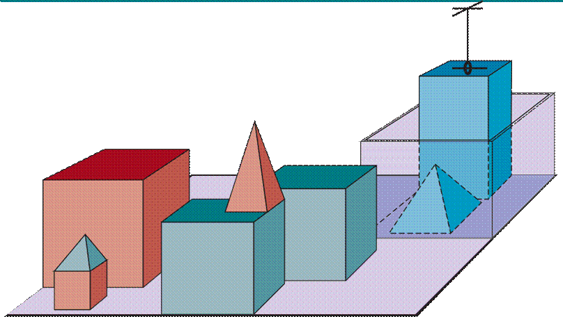

Chúng ta tự gọi mình là Homo sapiens – người thông thái – bởi vì trí thông minh rất quan trọng đối với chúng ta. Hàng ngàn năm qua, chúng ta đã cố gắng tìm hiểu cách mình suy nghĩ và hành động – tức là, bằng cách nào mà bộ não của chúng ta, một khối vật chất nhỏ bé, có thể nhận thức, thấu hiểu, dự đoán và điều khiển một thế giới rộng lớn và phức tạp hơn nhiều so với chính nó. Lĩnh vực trí tuệ nhân tạo (AI) không chỉ quan tâm đến việc tìm hiểu mà còn xây dựng các thực thể thông minh – những cỗ máy có thể tính toán cách hành động hiệu quả và an toàn trong nhiều tình huống mới lạ.
Các cuộc khảo sát thường xuyên xếp hạng AI là một trong những lĩnh vực thú vị và phát triển nhanh nhất, và nó đã tạo ra doanh thu hơn một nghìn tỉ đô la mỗi năm. Chuyên gia AI Kai-Fu Lee dự đoán tác động của nó sẽ “lớn hơn bất cứ điều gì trong lịch sử loài người”. Hơn nữa, các biên giới trí tuệ của AI vẫn còn rộng mở. Trong khi một sinh viên của một ngành khoa học cũ hơn như vật lý có thể cảm thấy những ý tưởng hay nhất đã được khám phá bởi Galileo, Newton, Curie, Einstein và những người khác, thì AI vẫn còn nhiều cơ hội cho những bộ óc vĩ đại.
Hiện tại, AI bao gồm rất nhiều các lĩnh vực con, từ những lĩnh vực tổng quát (học hỏi, suy luận, nhận thức, v.v.) đến những lĩnh vực cụ thể, chẳng hạn như chơi cờ, chứng minh các định lý toán học, viết thơ, lái xe hơi, hoặc chẩn đoán bệnh tật. AI có liên quan đến bất kỳ nhiệm vụ trí tuệ nào; nó thực sự là một lĩnh vực phổ quát.
Chúng ta đã khẳng định rằng AI rất thú vị, nhưng chúng ta chưa nói nó là gì. Trong lịch sử, các nhà nghiên cứu đã theo đuổi một số phiên bản AI khác nhau. Một số đã định nghĩa trí thông minh dựa trên sự giống với hiệu suất của con người, trong khi những người khác lại ưa thích một định nghĩa trí tuệ trừu tượng, chính thức được gọi là tính hợp lý (rationality) – nói một cách dễ hiểu là làm “điều đúng đắn”. Chủ đề nghiên cứu cũng khác nhau: một số coi trí thông minh là một thuộc tính của quá trình tư duy và suy luận bên trong, trong khi những người khác tập trung vào hành vi thông minh, một đặc điểm bên ngoài. Từ hai chiều – con người so với hợp lý và tư duy so với hành vi – có bốn sự kết hợp khả thi, và đã có những người ủng hộ và các chương trình nghiên cứu cho cả bốn.
Các phương pháp được sử dụng nhất thiết phải khác nhau: việc theo đuổi trí thông minh giống con người phải là một phần của khoa học thực nghiệm liên quan đến tâm lý học, bao gồm các quan sát và giả thuyết về hành vi và quá trình tư duy thực tế của con người; mặt khác, một cách tiếp cận duy lý bao gồm sự kết hợp giữa toán học và kỹ thuật, đồng thời kết nối với thống kê, lý thuyết điều khiển và kinh tế học. Các nhóm khác nhau vừa chê bai vừa hỗ trợ lẫn nhau. Hãy cùng xem xét chi tiết hơn bốn cách tiếp cận này.
Bài kiểm tra Turing, được đề xuất bởi Alan Turing (1950), được thiết kế như một thí nghiệm tư duy nhằm bỏ qua sự mơ hồ về triết học của câu hỏi “Liệu một cỗ máy có thể suy nghĩ không?”. Một máy tính vượt qua bài kiểm tra nếu một người thẩm vấn, sau khi đặt ra một số câu hỏi bằng văn bản, không thể phân biệt được câu trả lời bằng văn bản đó đến từ một người hay từ một máy tính. Chương 28 sẽ thảo luận chi tiết về bài kiểm tra và liệu một máy tính có thực sự thông minh nếu nó vượt qua. Hiện tại, chúng ta lưu ý rằng việc lập trình một máy tính để vượt qua một bài kiểm tra được áp dụng nghiêm ngặt sẽ cung cấp rất nhiều việc phải làm. Máy tính sẽ cần các khả năng sau:
· Xử lý ngôn ngữ tự nhiên để giao tiếp thành công bằng ngôn ngữ của con người;
· Biểu diễn tri thức để lưu trữ những gì nó biết hoặc nghe thấy;
· Suy luận tự động để trả lời các câu hỏi và đưa ra những kết luận mới;
· Học máy để thích ứng với các tình huống mới và phát hiện, ngoại suy các quy luật.
Turing cho rằng việc mô phỏng vật lý một người là không cần thiết để chứng minh trí thông minh. Tuy nhiên, các nhà nghiên cứu khác đã đề xuất một bài kiểm tra Turing toàn diện, yêu cầu tương tác với các đối tượng và con người trong thế giới thực. Để vượt qua bài kiểm tra Turing toàn diện, một robot sẽ cần:
· Thị giác máy tính và nhận dạng giọng nói để nhận thức thế giới;
· Người máy (Robotics) để điều khiển các vật thể và di chuyển xung quanh.
Sáu lĩnh vực này chiếm phần lớn AI. Tuy nhiên, các nhà nghiên cứu AI đã dành rất ít nỗ lực để vượt qua bài kiểm tra Turing, tin rằng việc nghiên cứu các nguyên tắc cơ bản của trí thông minh quan trọng hơn. Cuộc tìm kiếm “chuyến bay nhân tạo” đã thành công khi các kỹ sư và nhà phát minh ngừng bắt chước loài chim và bắt đầu sử dụng ống gió, đồng thời tìm hiểu về khí động học. Các văn bản kỹ thuật hàng không không định nghĩa mục tiêu của lĩnh vực này là tạo ra “những cỗ máy bay giống hệt chim bồ câu đến mức có thể đánh lừa cả những con chim bồ câu khác”.
Để nói rằng một chương trình suy nghĩ giống con người, chúng ta phải biết con người suy nghĩ như thế nào. Chúng ta có thể tìm hiểu về suy nghĩ của con người bằng ba cách:
· Nội quan – cố gắng nắm bắt suy nghĩ của chính mình khi chúng trôi qua;
· Thí nghiệm tâm lý – quan sát một người đang hành động;
· Chụp ảnh não – quan sát bộ não đang hoạt động.
Một khi chúng ta có một lý thuyết đủ chính xác về tâm trí, thì việc thể hiện lý thuyết đó dưới dạng một chương trình máy tính sẽ trở nên khả thi. Nếu hành vi đầu vào-đầu ra của chương trình khớp với hành vi tương ứng của con người, đó là bằng chứng cho thấy một số cơ chế của chương trình cũng có thể đang hoạt động trong con người.
Ví dụ, Allen Newell và Herbert Simon, những người đã phát triển GPS, “Bộ giải quyết vấn đề tổng quát” (Newell và Simon, 1961), không chỉ hài lòng với việc chương trình của họ giải quyết các vấn đề một cách chính xác. Họ quan tâm nhiều hơn đến việc so sánh trình tự và thời gian của các bước suy luận của nó với các đối tượng là con người khi giải quyết cùng một vấn đề. Lĩnh vực liên ngành của khoa học nhận thức (cognitive science) tập hợp các mô hình máy tính từ AI và các kỹ thuật thực nghiệm từ tâm lý học để xây dựng các lý thuyết chính xác và có thể kiểm chứng về tâm trí con người.
Khoa học nhận thức tự nó là một lĩnh vực hấp dẫn, xứng đáng với nhiều cuốn sách giáo khoa và ít nhất một cuốn bách khoa toàn thư (Wilson và Keil, 1999). Thỉnh thoảng chúng ta sẽ bình luận về những điểm tương đồng hoặc khác biệt giữa các kỹ thuật AI và nhận thức của con người. Tuy nhiên, khoa học nhận thức thực sự nhất thiết phải dựa trên điều tra thực nghiệm về con người hoặc động vật thực tế. Chúng ta sẽ dành điều đó cho những cuốn sách khác, vì chúng ta giả định rằng người đọc chỉ có một máy tính để thử nghiệm.
Trong những ngày đầu của AI, thường có sự nhầm lẫn giữa các cách tiếp cận. Một tác giả có thể lập luận rằng một thuật toán hoạt động tốt trong một nhiệm vụ và do đó, nó là một mô hình tốt về hiệu suất của con người, hoặc ngược lại. Các tác giả hiện đại tách biệt hai loại tuyên bố này; sự phân biệt này đã cho phép cả AI và khoa học nhận thức phát triển nhanh hơn. Hai lĩnh vực này nuôi dưỡng lẫn nhau, đáng chú ý nhất là trong thị giác máy tính, nơi kết hợp bằng chứng điện sinh lý thần kinh vào các mô hình tính toán. Gần đây, sự kết hợp giữa các phương pháp chụp ảnh thần kinh với các kỹ thuật học máy để phân tích dữ liệu như vậy đã dẫn đến sự khởi đầu của một khả năng “đọc suy nghĩ” – tức là, để xác định nội dung ngữ nghĩa trong suy nghĩ bên trong của một người. Khả năng này, đến lượt nó, có thể làm sáng tỏ hơn về cách thức hoạt động của nhận thức con người.
Nhà triết học Hy Lạp Aristotle là một trong những người đầu tiên cố gắng hệ thống hóa “tư duy đúng đắn” – tức là các quy trình suy luận không thể bác bỏ. Các tam đoạn luận của ông đã cung cấp các mô hình cho cấu trúc lập luận luôn đưa ra kết luận đúng khi các tiền đề là đúng. Ví dụ điển hình bắt đầu với “Socrates là một người đàn ông” và “tất cả đàn ông đều phải chết”, và kết luận “Socrates phải chết”. (Ví dụ này có lẽ là của Sextus Empiricus chứ không phải Aristotle.) Những quy luật tư duy này được cho là chi phối hoạt động của trí óc; việc nghiên cứu chúng đã khởi xướng lĩnh vực được gọi là logic.
Các nhà logic học vào thế kỷ 19 đã phát triển một ký hiệu chính xác cho các câu nói về các đối tượng trong thế giới và các mối quan hệ giữa chúng. (Hãy đối chiếu điều này với ký hiệu số học thông thường, chỉ cung cấp các câu nói về các con số.) Đến năm 1965, các chương trình về nguyên tắc có thể giải quyết bất kỳ vấn đề nào có thể giải được được mô tả bằng ký hiệu logic. Truyền thống được gọi là phái logic trong trí tuệ nhân tạo hy vọng sẽ xây dựng trên các chương trình như vậy để tạo ra các hệ thống thông minh.
Logic theo cách hiểu thông thường đòi hỏi kiến thức về thế giới phải chắc chắn – một điều kiện mà trên thực tế hiếm khi đạt được. Chúng ta đơn giản là không biết các quy tắc của, chẳng hạn, chính trị hoặc chiến tranh theo cùng một cách mà chúng ta biết các quy tắc của cờ vua hoặc số học. Lý thuyết xác suất lấp đầy khoảng trống này, cho phép suy luận chặt chẽ với thông tin không chắc chắn. Về nguyên tắc, nó cho phép xây dựng một mô hình toàn diện về tư duy hợp lý, dẫn từ thông tin nhận thức thô đến sự hiểu biết về cách thế giới hoạt động và đến các dự đoán về tương lai. Tuy nhiên, điều nó không làm được là tạo ra hành vi thông minh. Đối với điều đó, chúng ta cần một lý thuyết về hành động hợp lý. Bản thân tư duy hợp lý là chưa đủ.
Một tác nhân (agent) chỉ đơn thuần là một thứ gì đó hoạt động (tác nhân xuất phát từ tiếng Latin agere, nghĩa là làm). Tất nhiên, tất cả các chương trình máy tính đều làm điều gì đó, nhưng các tác nhân máy tính được mong đợi sẽ làm nhiều hơn: hoạt động một cách tự chủ, nhận thức môi trường của chúng, tồn tại trong một khoảng thời gian dài, thích ứng với sự thay đổi, và tạo ra và theo đuổi các mục tiêu. Một tác nhân hợp lý là một tác nhân hành động sao cho đạt được kết quả tốt nhất hoặc, khi có sự không chắc chắn, là kết quả mong đợi tốt nhất.
Trong cách tiếp cận AI “các quy luật của tư duy”, trọng tâm là suy luận chính xác. Việc suy luận chính xác đôi khi là một phần của việc trở thành một tác nhân hợp lý, bởi vì một cách để hành động hợp lý là suy ra rằng một hành động nhất định là tốt nhất và sau đó hành động theo kết luận đó. Mặt khác, có những cách hành động hợp lý không thể nói là liên quan đến suy luận. Ví dụ, rụt tay lại khỏi một bếp lò nóng là một hành động phản xạ thường thành công hơn một hành động chậm hơn được thực hiện sau khi cân nhắc kỹ lưỡng.
Tất cả các kỹ năng cần thiết cho bài kiểm tra Turing cũng cho phép một tác nhân hành động hợp lý. Biểu diễn tri thức và suy luận cho phép các tác nhân đưa ra các quyết định tốt. Chúng ta cần có khả năng tạo ra các câu có thể hiểu được bằng ngôn ngữ tự nhiên để hòa nhập trong một xã hội phức tạp. Chúng ta cần học hỏi không chỉ để có kiến thức uyên bác, mà còn vì nó cải thiện khả năng của chúng ta trong việc tạo ra hành vi hiệu quả, đặc biệt trong những trường hợp mới.
Cách tiếp cận tác nhân hợp lý đối với AI có hai lợi thế so với các cách tiếp cận khác. Thứ nhất, nó tổng quát hơn cách tiếp cận “các quy luật của tư duy” vì suy luận chính xác chỉ là một trong một vài cơ chế có thể có để đạt được tính hợp lý. Thứ hai, nó dễ phát triển khoa học hơn. Tiêu chuẩn về tính hợp lý được định nghĩa toán học rõ ràng và hoàn toàn tổng quát. Chúng ta thường có thể quay ngược lại từ đặc tả này để đưa ra các thiết kế tác nhân mà có thể chứng minh là đạt được nó – một điều gần như không thể nếu mục tiêu là bắt chước hành vi hoặc quá trình tư duy của con người.
Vì những lý do này, cách tiếp cận tác nhân hợp lý đối với AI đã chiếm ưu thế trong hầu hết lịch sử của lĩnh vực này. Trong những thập kỷ đầu, các tác nhân hợp lý được xây dựng trên nền tảng logic và hình thành các kế hoạch rõ ràng để đạt được các mục tiêu cụ thể. Sau đó, các phương pháp dựa trên lý thuyết xác suất và học máy đã cho phép tạo ra các tác nhân có thể đưa ra quyết định trong điều kiện không chắc chắn để đạt được kết quả mong đợi tốt nhất. Tóm lại, AI đã tập trung vào việc nghiên cứu và xây dựng các tác nhân làm điều đúng đắn. Điều gì được coi là điều đúng đắn được xác định bởi mục tiêu mà chúng ta cung cấp cho tác nhân. Mô hình tổng quát này phổ biến đến mức chúng ta có thể gọi nó là mô hình chuẩn. Nó chiếm ưu thế không chỉ trong AI, mà còn trong lý thuyết điều khiển, nơi một bộ điều khiển giảm thiểu một hàm chi phí; trong nghiên cứu vận trù học, nơi một chính sách tối đa hóa tổng các phần thưởng; trong thống kê, nơi một quy tắc quyết định giảm thiểu một hàm mất mát; và trong kinh tế học, nơi một người ra quyết định tối đa hóa tiện ích hoặc một số thước đo phúc lợi xã hội.
Chúng ta cần thực hiện một sự tinh chỉnh quan trọng đối với mô hình chuẩn để giải thích một thực tế rằng tính hợp lý hoàn hảo – luôn thực hiện hành động tối ưu tuyệt đối – là không khả thi trong các môi trường phức tạp. Các yêu cầu tính toán quá cao. Chương 6 và 16 đề cập đến vấn đề tính hợp lý hạn chế – hành động thích hợp khi không có đủ thời gian để thực hiện tất cả các phép tính mà người ta muốn. Tuy nhiên, tính hợp lý hoàn hảo thường vẫn là một điểm khởi đầu tốt cho phân tích lý thuyết.
Mô hình chuẩn đã là một hướng dẫn hữu ích cho nghiên cứu AI kể từ khi nó ra đời, nhưng về lâu dài, có lẽ nó không phải là mô hình đúng. Lý do là mô hình chuẩn giả định rằng chúng ta sẽ cung cấp một mục tiêu được xác định đầy đủ cho máy móc.
Đối với một nhiệm vụ được xác định một cách nhân tạo như cờ vua hoặc tính toán đường đi ngắn nhất, nhiệm vụ đó đi kèm với một mục tiêu được xây dựng sẵn – vì vậy mô hình chuẩn có thể áp dụng được. Tuy nhiên, khi chúng ta tiến vào thế giới thực, việc xác định mục tiêu một cách đầy đủ và chính xác ngày càng trở nên khó khăn. Ví dụ, khi thiết kế một chiếc xe tự lái, người ta có thể nghĩ rằng mục tiêu là đến đích một cách an toàn. Nhưng lái xe trên bất kỳ con đường nào cũng có nguy cơ bị thương do các tài xế khác đi sai, hỏng hóc thiết bị, v.v.; do đó, một mục tiêu an toàn nghiêm ngặt đòi hỏi phải ở trong ga-ra. Có một sự đánh đổi giữa việc tiến về đích và phải chịu rủi ro bị thương. Sự đánh đổi này nên được thực hiện như thế nào? Hơn nữa, chúng ta có thể cho phép chiếc xe thực hiện các hành động gây khó chịu cho các tài xế khác đến mức nào? Chiếc xe nên điều chỉnh gia tốc, đánh lái và phanh ở mức nào để tránh làm hành khách bị xóc? Những câu hỏi này rất khó trả lời ngay từ đầu. Chúng đặc biệt có vấn đề trong lĩnh vực tổng quát của tương tác giữa con người và robot, mà xe tự lái là một ví dụ.
Vấn đề đạt được sự đồng thuận giữa sở thích thực sự của chúng ta và mục tiêu mà chúng ta đưa vào máy được gọi là vấn đề căn chỉnh giá trị: các giá trị hoặc mục tiêu được đưa vào máy phải được căn chỉnh với các giá trị của con người. Nếu chúng ta đang phát triển một hệ thống AI trong phòng thí nghiệm hoặc trong một trình mô phỏng – như đã xảy ra trong phần lớn lịch sử của lĩnh vực này – có một cách khắc phục dễ dàng cho một mục tiêu được xác định không chính xác: đặt lại hệ thống, sửa mục tiêu và thử lại. Khi lĩnh vực này tiến tới các hệ thống thông minh ngày càng có năng lực hơn được triển khai trong thế giới thực, cách tiếp cận này không còn khả thi nữa. Một hệ thống được triển khai với một mục tiêu không chính xác sẽ có những hậu quả tiêu cực. Hơn nữa, hệ thống càng thông minh thì hậu quả càng tiêu cực.
Quay trở lại ví dụ cờ vua dường như không có vấn đề, hãy xem điều gì xảy ra nếu cỗ máy đủ thông minh để suy luận và hành động ngoài giới hạn của bàn cờ. Trong trường hợp đó, nó có thể cố gắng tăng cơ hội chiến thắng bằng các mánh lới như thôi miên hoặc tống tiền đối thủ hoặc hối lộ khán giả để tạo ra tiếng ồn lạo xạo trong thời gian đối thủ suy nghĩ. Nó cũng có thể cố gắng chiếm đoạt thêm sức mạnh tính toán cho chính mình. Những hành vi này không phải là “không thông minh” hay “điên rồ”; chúng là một hệ quả logic của việc xác định chiến thắng là mục tiêu duy nhất cho cỗ máy.
Không thể lường trước tất cả các cách mà một cỗ máy theo đuổi một mục tiêu cố định có thể hành xử sai. Do đó, có lý do chính đáng để nghĩ rằng mô hình chuẩn là không thỏa đáng. Chúng ta không muốn những cỗ máy thông minh theo nghĩa theo đuổi mục tiêu của chúng; chúng ta muốn chúng theo đuổi mục tiêu của chúng ta. Nếu chúng ta không thể chuyển giao hoàn hảo những mục tiêu đó cho cỗ máy, thì chúng ta cần một công thức mới – trong đó cỗ máy đang theo đuổi mục tiêu của chúng ta, nhưng nhất thiết phải không chắc chắn về chúng là gì. Khi một cỗ máy biết rằng nó không biết mục tiêu đầy đủ, nó có động cơ để hành động thận trọng, xin phép, tìm hiểu thêm về sở thích của chúng ta thông qua quan sát, và tuân theo sự kiểm soát của con người. Cuối cùng, chúng ta muốn các tác nhân có thể chứng minh là có lợi cho con người. Chúng ta sẽ quay lại chủ đề này trong Mục 1.5.
Trong phần này, chúng tôi cung cấp một lịch sử tóm tắt về các lĩnh vực đã đóng góp ý tưởng, quan điểm và kỹ thuật cho AI. Giống như bất kỳ lịch sử nào, lịch sử này tập trung vào một số ít người, sự kiện và ý tưởng và bỏ qua những thứ khác cũng quan trọng. Chúng tôi sắp xếp lịch sử xung quanh một loạt các câu hỏi. Chắc chắn chúng tôi không muốn tạo ấn tượng rằng những câu hỏi này là những câu hỏi duy nhất mà các lĩnh vực này giải quyết hoặc rằng các lĩnh vực này đều đang làm việc hướng tới AI như là thành quả cuối cùng của chúng.
· Liệu các quy tắc hình thức có thể được sử dụng để đưa ra các kết luận hợp lệ không?
· Làm thế nào mà tâm trí lại phát sinh từ một bộ não vật lý?
· Kiến thức đến từ đâu?
· Làm thế nào kiến thức dẫn đến hành động?
Aristotle (384–322 TCN) là người đầu tiên đưa ra một tập hợp các quy luật chính xác chi phối phần lý trí của tâm trí. Ông đã phát triển một hệ thống tam đoạn luận không chính thức để suy luận đúng đắn, về nguyên tắc cho phép người ta tạo ra các kết luận một cách máy móc, với các tiền đề ban đầu.
Ramon Llull (khoảng 1232–1315) đã nghĩ ra một hệ thống suy luận được xuất bản dưới dạng Ars Magna hay Nghệ thuật Vĩ đại (1305). Llull đã cố gắng triển khai hệ thống của mình bằng cách sử dụng một thiết bị cơ khí thực tế: một bộ bánh xe giấy có thể được xoay thành các hoán vị khác nhau.
Khoảng năm 1500, Leonardo da Vinci (1452–1519) đã thiết kế nhưng không chế tạo một máy tính cơ học; các bản tái tạo gần đây đã cho thấy thiết kế đó có chức năng. Cỗ máy tính toán được biết đến đầu tiên được chế tạo vào khoảng năm 1623 bởi nhà khoa học người Đức Wilhelm Schickard (1592–1635). Blaise Pascal (1623–1662) đã chế tạo Pascaline vào năm 1642 và viết rằng nó “tạo ra những hiệu ứng có vẻ gần với suy nghĩ hơn tất cả các hành động của động vật”. Gottfried Wilhelm Leibniz (1646–1716) đã chế tạo một thiết bị cơ học nhằm thực hiện các phép toán trên các khái niệm thay vì các con số, nhưng phạm vi của nó khá hạn chế. Trong cuốn sách Leviathan (1651) của mình, Thomas Hobbes (1588–1679) đã đề xuất ý tưởng về một cỗ máy suy nghĩ, một “con vật nhân tạo” theo lời của ông, lập luận rằng “Bởi vì trái tim là gì nếu không phải là một lò xo; và các dây thần kinh, nếu không phải là rất nhiều sợi dây; và các khớp nối, nếu không phải là rất nhiều bánh xe.” Ông cũng gợi ý rằng suy luận giống như tính toán số: “‘Lý do’… không là gì ngoài ‘tính toán,’ tức là cộng và trừ.”
Nói rằng tâm trí hoạt động, ít nhất là một phần, theo các quy tắc logic hoặc số học, và xây dựng các hệ thống vật lý mô phỏng một số quy tắc đó là một chuyện. Nói rằng bản thân tâm trí là một hệ thống vật lý như vậy lại là một chuyện khác. René Descartes (1596–1650) đã đưa ra cuộc thảo luận rõ ràng đầu tiên về sự khác biệt giữa tâm trí và vật chất. Ông lưu ý rằng một quan niệm hoàn toàn vật lý về tâm trí dường như để lại rất ít chỗ cho ý chí tự do. Nếu tâm trí hoàn toàn bị chi phối bởi các quy luật vật lý, thì nó không có ý chí tự do hơn một tảng đá “quyết định” rơi xuống. Descartes là một người ủng hộ thuyết nhị nguyên. Ông cho rằng có một phần của tâm trí con người (hoặc linh hồn hoặc tinh thần) nằm ngoài tự nhiên, miễn nhiễm với các quy luật vật lý. Mặt khác, động vật không sở hữu phẩm chất nhị nguyên này; chúng có thể được coi là máy móc.
Một phương án thay thế cho thuyết nhị nguyên là thuyết duy vật, cho rằng hoạt động của bộ não theo các quy luật vật lý cấu thành nên tâm trí. Ý chí tự do chỉ đơn giản là cách mà nhận thức về các lựa chọn có sẵn xuất hiện với thực thể đang lựa chọn. Các thuật ngữ thuyết duy vật và thuyết tự nhiên cũng được sử dụng để mô tả quan điểm này, đối lập với siêu nhiên.
Với một tâm trí vật lý thao tác kiến thức, vấn đề tiếp theo là thiết lập nguồn gốc của kiến thức. Phong trào thuyết kinh nghiệm (empiricism), bắt đầu với Novum Organum của Francis Bacon (1561–1626), được đặc trưng bởi một châm ngôn của John Locke (1632–1704): “Không có gì trong sự hiểu biết, mà không phải là thứ đầu tiên trong các giác quan.”
A Treatise of Human Nature (Hume, 1739) của David Hume (1711–1776) đã đề xuất cái hiện nay được gọi là nguyên tắc quy nạp: các quy tắc chung được lĩnh hội bằng cách tiếp xúc với các mối liên kết lặp đi lặp lại giữa các yếu tố của chúng.
Dựa trên công trình của Ludwig Wittgenstein (1889–1951) và Bertrand Russell (1872–1970), Nhóm Vienna nổi tiếng (Sigmund, 2017), một nhóm các nhà triết học và toán học gặp gỡ ở Vienna vào những năm 1920 và 1930, đã phát triển học thuyết thuyết thực chứng logic. Học thuyết này cho rằng tất cả kiến thức có thể được đặc trưng bởi các lý thuyết logic được kết nối, cuối cùng, với các câu quan sát tương ứng với các đầu vào cảm giác; do đó, thuyết thực chứng logic kết hợp thuyết duy lý và thuyết kinh nghiệm.
Lý thuyết xác nhận của Rudolf Carnap (1891–1970) và Carl Hempel (1905–1997) đã cố gắng phân tích việc thu nhận kiến thức từ kinh nghiệm bằng cách định lượng mức độ tin tưởng nên được gán cho các câu logic dựa trên mối liên hệ của chúng với các quan sát xác nhận hoặc bác bỏ chúng. Cuốn sách Cấu trúc Logic của Thế giới (1928) của Carnap có lẽ là lý thuyết đầu tiên về tâm trí như một quá trình tính toán.
Yếu tố cuối cùng trong bức tranh triết học về tâm trí là mối liên hệ giữa kiến thức và hành động. Câu hỏi này rất quan trọng đối với AI vì trí thông minh đòi hỏi hành động cũng như suy luận. Hơn nữa, chỉ bằng cách hiểu cách các hành động được biện minh, chúng ta mới có thể hiểu cách xây dựng một tác nhân mà các hành động của nó có thể biện minh được (hay hợp lý).
Aristotle đã lập luận (trong De Motu Animalium) rằng các hành động được biện minh bằng một mối liên hệ logic giữa các mục tiêu và kiến thức về kết quả của hành động:
Nhưng làm thế nào mà suy nghĩ đôi khi đi kèm với hành động và đôi khi thì không, đôi khi đi kèm với chuyển động, và đôi khi thì không? Có vẻ như điều gần như tương tự xảy ra như trong trường hợp suy luận và đưa ra kết luận về các đối tượng không thay đổi. Nhưng trong trường hợp đó, mục đích là một mệnh đề suy đoán… trong khi ở đây kết luận rút ra từ hai tiền đề là một hành động… Tôi cần một cái gì đó để che thân; một chiếc áo choàng là một cái gì đó để che thân. Tôi cần một chiếc áo choàng. Cái tôi cần, tôi phải làm; tôi cần một chiếc áo choàng. Tôi phải làm một chiếc áo choàng. Và kết luận, “Tôi phải làm một chiếc áo choàng,” là một hành động.
Trong Đạo đức Nicomachean (Sách III. 3, 1112b), Aristotle tiếp tục trình bày chi tiết về chủ đề này, gợi ý một thuật toán:
Chúng ta không cân nhắc về mục đích, mà là về phương tiện. Bởi vì một bác sĩ không cân nhắc liệu ông ta có nên chữa bệnh, hay một nhà hùng biện có nên thuyết phục, … Họ giả định mục đích và xem xét bằng cách nào và bằng phương tiện gì để đạt được nó, và nếu nó có vẻ dễ dàng và được tạo ra tốt nhất bằng cách đó; trong khi nếu nó chỉ đạt được bằng một phương tiện duy nhất, họ sẽ xem xét nó sẽ đạt được bằng cách nào và bằng phương tiện gì thì nó sẽ đạt được, cho đến khi họ đi đến nguyên nhân đầu tiên, … và điều cuối cùng trong thứ tự phân tích dường như là điều đầu tiên trong thứ tự trở thành. Và nếu chúng ta gặp phải một điều không thể, chúng ta từ bỏ cuộc tìm kiếm, ví dụ, nếu chúng ta cần tiền và không thể có được; nhưng nếu một điều gì đó có vẻ khả thi, chúng ta cố gắng làm nó.
Thuật toán của Aristotle đã được Newell và Simon triển khai 2300 năm sau đó trong chương trình Giải quyết Vấn đề Tổng quát của họ. Chúng ta bây giờ sẽ gọi nó là một hệ thống lập kế hoạch lùi tham lam (xem Chương 11). Các phương pháp dựa trên lập kế hoạch logic để đạt được các mục tiêu xác định đã thống trị vài thập kỷ đầu tiên của nghiên cứu lý thuyết trong AI.
Chỉ suy nghĩ về các hành động đạt được mục tiêu thường hữu ích nhưng đôi khi không thể áp dụng được. Ví dụ, nếu có một số cách khác nhau để đạt được một mục tiêu, cần phải có một cách nào đó để chọn trong số chúng. Quan trọng hơn, có thể không thể đạt được mục tiêu một cách chắc chắn, nhưng vẫn phải thực hiện một hành động nào đó. Vậy thì người ta nên quyết định như thế nào? Antoine Arnauld (1662), khi phân tích khái niệm các quyết định hợp lý trong cờ bạc, đã đề xuất một công thức định lượng để tối đa hóa giá trị tiền tệ mong đợi của kết quả. Sau đó, Daniel Bernoulli (1738) đã giới thiệu khái niệm tổng quát hơn về tính hữu dụng (utility) để nắm bắt giá trị chủ quan, nội tại của một kết quả. Khái niệm hiện đại về ra quyết định hợp lý trong điều kiện không chắc chắn liên quan đến việc tối đa hóa tiện ích mong đợi, như được giải thích trong Chương 15.
Trong các vấn đề về đạo đức và chính sách công, một người ra quyết định phải xem xét lợi ích của nhiều cá nhân. Jeremy Bentham (1823) và John Stuart Mill (1863) đã thúc đẩy ý tưởng về chủ nghĩa vị lợi (utilitarianism): rằng việc ra quyết định hợp lý dựa trên việc tối đa hóa tiện ích nên được áp dụng cho tất cả các lĩnh vực hoạt động của con người, bao gồm cả các quyết định chính sách công được đưa ra thay mặt cho nhiều cá nhân. Chủ nghĩa vị lợi là một loại cụ thể của thuyết hậu quả: ý tưởng rằng điều gì là đúng và sai được xác định bởi kết quả mong đợi của một hành động.
Ngược lại, Immanuel Kant, vào năm 1785, đã đề xuất một lý thuyết về đạo đức dựa trên quy tắc hay đạo đức học nghĩa vụ, trong đó “làm điều đúng đắn” không được xác định bởi kết quả mà bởi các quy luật xã hội phổ quát chi phối các hành động được cho phép, chẳng hạn như “đừng nói dối” hoặc “đừng giết người”. Do đó, một người theo chủ nghĩa vị lợi có thể nói một lời nói dối vô hại nếu lợi ích mong đợi lớn hơn tác hại, nhưng một người theo thuyết Kant sẽ bị ràng buộc không được nói dối, bởi vì nói dối vốn dĩ là sai. Mill thừa nhận giá trị của các quy tắc, nhưng hiểu chúng là các quy trình quyết định hiệu quả được tổng hợp từ suy luận nguyên tắc đầu tiên về hậu quả. Nhiều hệ thống AI hiện đại áp dụng chính xác cách tiếp cận này.
· Đâu là các quy tắc hình thức để đưa ra các kết luận hợp lệ?
· Cái gì có thể được tính toán?
· Chúng ta suy luận với thông tin không chắc chắn như thế nào?
Các nhà triết học đã đặt ra một số ý tưởng cơ bản của AI, nhưng bước nhảy vọt sang một ngành khoa học chính thức đòi hỏi phải toán học hóa logic và xác suất, và sự ra đời của một nhánh toán học mới: tính toán.
Ý tưởng về logic hình thức có thể được truy ngược về các nhà triết học Hy Lạp, Ấn Độ và Trung Quốc cổ đại, nhưng sự phát triển toán học của nó thực sự bắt đầu với công trình của George Boole (1815–1864), người đã làm chi tiết về logic mệnh đề, hay logic Boolean (Boole, 1847). Năm 1879, Gottlob Frege (1848–1925) đã mở rộng logic của Boole để bao gồm các đối tượng và các mối quan hệ, tạo ra logic bậc nhất được sử dụng ngày nay. Ngoài vai trò trung tâm trong giai đoạn đầu của nghiên cứu AI, logic bậc nhất đã thúc đẩy công trình của Go¨del và Turing, những người đã làm nền tảng cho chính tính toán, như chúng tôi giải thích dưới đây.
Lý thuyết xác suất có thể được xem như là tổng quát hóa logic cho các tình huống có thông tin không chắc chắn – một sự cân nhắc có tầm quan trọng lớn đối với AI. Gerolamo Cardano (1501–1576) lần đầu tiên đưa ra ý tưởng về xác suất, mô tả nó theo các kết quả có thể có của các sự kiện cờ bạc. Năm 1654, Blaise Pascal (1623–1662), trong một lá thư gửi Pierre Fermat (1601–1665), đã chỉ ra cách dự đoán tương lai của một trò chơi cờ bạc chưa hoàn thành và gán các khoản thanh toán trung bình cho những người chơi cờ bạc. Xác suất nhanh chóng trở thành một phần không thể thiếu của các ngành khoa học định lượng, giúp giải quyết các phép đo không chắc chắn và các lý thuyết không đầy đủ. Jacob Bernoulli (1654–1705, chú của Daniel), Pierre Laplace (1749–1827) và những người khác đã phát triển lý thuyết và giới thiệu các phương pháp thống kê mới. Thomas Bayes (1702–1761) đã đề xuất một quy tắc để cập nhật xác suất khi có bằng chứng mới; quy tắc Bayes là một công cụ quan trọng cho các hệ thống AI.
Việc hình thức hóa xác suất, kết hợp với sự sẵn có của dữ liệu, đã dẫn đến sự ra đời của thống kê như một lĩnh vực. Một trong những ứng dụng đầu tiên là phân tích dữ liệu điều tra dân số Luân Đôn của John Graunt vào năm 1662. Ronald Fisher được coi là nhà thống kê hiện đại đầu tiên (Fisher, 1922). Ông đã kết hợp các ý tưởng về xác suất, thiết kế thử nghiệm, phân tích dữ liệu và tính toán – vào năm 1919, ông khăng khăng rằng ông không thể làm việc mà không có một máy tính cơ học có tên là MILLIONAIRE (chiếc máy tính đầu tiên có thể thực hiện phép nhân), mặc dù chi phí của chiếc máy tính đó cao hơn tiền lương hàng năm của ông (Ross, 2012).
Lịch sử của tính toán cũng cổ xưa như lịch sử của các con số, nhưng thuật toán không tầm thường đầu tiên được cho là thuật toán Euclid để tính ước số chung lớn nhất. Từ “thuật toán” (algorithm) xuất phát từ Muhammad ibn Musa al-Khwarizmi, một nhà toán học thế kỷ thứ 9, người mà các tác phẩm của ông cũng đã giới thiệu chữ số Ả Rập và đại số cho châu Âu. Boole và những người khác đã thảo luận về các thuật toán cho suy luận logic, và, vào cuối thế kỷ 19, các nỗ lực đã được tiến hành để hình thức hóa suy luận toán học tổng quát thành suy luận logic.
Kurt Go¨del (1906–1978) đã chỉ ra rằng tồn tại một thủ tục hiệu quả để chứng minh bất kỳ tuyên bố đúng nào trong logic bậc nhất của Frege và Russell, nhưng logic bậc nhất không thể nắm bắt nguyên tắc quy nạp toán học cần thiết để đặc trưng hóa các số tự nhiên. Năm 1931, Go¨del đã chỉ ra rằng các giới hạn về suy luận thực sự tồn tại. Định lý bất toàn của ông đã chỉ ra rằng trong bất kỳ lý thuyết hình thức nào mạnh như số học Peano (lý thuyết cơ bản về các số tự nhiên), nhất thiết phải có những tuyên bố đúng không có bằng chứng trong lý thuyết.
Kết quả cơ bản này cũng có thể được giải thích là cho thấy một số hàm trên các số nguyên không thể được biểu diễn bằng một thuật toán – tức là chúng không thể được tính toán. Điều này đã thúc đẩy Alan Turing (1912–1954) cố gắng đặc trưng hóa chính xác những hàm nào là có thể tính toán được (computable) – có khả năng được tính toán bằng một thủ tục hiệu quả. Luận đề Church–Turing đề xuất xác định khái niệm tổng quát về tính toán với các hàm được tính toán bởi một máy Turing (Turing, 1936). Turing cũng chỉ ra rằng có một số hàm mà không có máy Turing nào có thể tính toán được. Ví dụ, không có máy nào có thể nói chung liệu một chương trình đã cho sẽ trả về một câu trả lời trên một đầu vào đã cho hay chạy mãi mãi.
Mặc dù tính toán là quan trọng để hiểu về tính toán, khái niệm khả thi (tractability) thậm chí còn có tác động lớn hơn đến AI. Nói một cách đại khái, một vấn đề được gọi là không khả thi nếu thời gian cần thiết để giải quyết các trường hợp của vấn đề tăng theo cấp số nhân với kích thước của các trường hợp. Sự khác biệt giữa tăng trưởng theo cấp số mũ và tăng trưởng theo cấp số mũ về độ phức tạp lần đầu tiên được nhấn mạnh vào giữa những năm 1960 (Cobham, 1964; Edmonds, 1965). Điều này rất quan trọng vì tăng trưởng theo cấp số nhân có nghĩa là ngay cả các trường hợp có kích thước vừa phải cũng không thể được giải quyết trong bất kỳ khoảng thời gian hợp lý nào.
Lý thuyết NP-hoàn chỉnh (NP-completeness), tiên phong bởi Cook (1971) và Karp (1972), cung cấp một cơ sở để phân tích tính khả thi của các vấn đề: bất kỳ lớp vấn đề nào mà lớp các vấn đề NP-hoàn chỉnh có thể được quy về thì có khả năng là không khả thi. (Mặc dù chưa được chứng minh rằng các vấn đề NP-hoàn chỉnh nhất thiết phải không khả thi, hầu hết các nhà lý thuyết đều tin vào điều đó.) Những kết quả này trái ngược với sự lạc quan mà báo chí đại chúng đã chào đón những chiếc máy tính đầu tiên – “Siêu não điện tử” “Nhanh hơn Einstein!”. Mặc dù tốc độ của máy tính ngày càng tăng, việc sử dụng cẩn thận các tài nguyên và sự không hoàn hảo cần thiết sẽ là đặc điểm của các hệ thống thông minh. Nói một cách thô thiển, thế giới là một trường hợp vấn đề cực kỳ lớn!
· Chúng ta nên đưa ra quyết định như thế nào cho phù hợp với sở thích của mình?
· Chúng ta nên làm điều này như thế nào khi những người khác có thể không đồng tình?
· Chúng ta nên làm điều này như thế nào khi phần thưởng có thể ở rất xa trong tương lai?
Khoa học kinh tế ra đời vào năm 1776, khi Adam Smith (1723–1790) xuất bản cuốn Một cuộc điều tra về Bản chất và Nguyên nhân của Của cải Quốc gia. Smith đã đề xuất phân tích các nền kinh tế bao gồm nhiều tác nhân cá nhân quan tâm đến lợi ích của chính họ. Tuy nhiên, Smith không ủng hộ lòng tham tài chính như một quan điểm đạo đức: cuốn sách trước đó của ông (1759) Lý thuyết về Cảm tình Đạo đức bắt đầu bằng cách chỉ ra rằng sự quan tâm đến hạnh phúc của người khác là một thành phần thiết yếu trong lợi ích của mỗi cá nhân.
Hầu hết mọi người nghĩ kinh tế học là về tiền bạc, và trên thực tế, phân tích toán học đầu tiên về các quyết định trong điều kiện không chắc chắn, công thức giá trị mong đợi tối đa của Arnauld (1662), đã đề cập đến giá trị tiền tệ của các vụ cá cược. Daniel Bernoulli (1738) nhận thấy rằng công thức này dường như không hoạt động tốt đối với số tiền lớn hơn, chẳng hạn như các khoản đầu tư vào các cuộc thám hiểm thương mại hàng hải. Thay vào đó, ông đề xuất một nguyên tắc dựa trên việc tối đa hóa tiện ích (utility) mong đợi, và giải thích các lựa chọn đầu tư của con người bằng cách đề xuất rằng tiện ích cận biên của một lượng tiền bổ sung giảm đi khi một người có được nhiều tiền hơn.
Léon Walras (phát âm là “Valrasse”) (1834–1910) đã đưa ra một nền tảng tổng quát hơn cho lý thuyết tiện ích theo sở thích giữa các vụ cá cược về bất kỳ kết quả nào (không chỉ kết quả tiền tệ). Lý thuyết được cải thiện bởi Ramsey (1931) và sau đó bởi John von Neumann và Oskar Morgenstern trong cuốn sách của họ Lý thuyết về Trò chơi và Hành vi Kinh tế (1944). Kinh tế học không còn là nghiên cứu về tiền bạc; thay vào đó, nó là nghiên cứu về ham muốn và sở thích.
Lý thuyết quyết định, kết hợp lý thuyết xác suất với lý thuyết tiện ích, cung cấp một khuôn khổ chính thức và hoàn chỉnh cho các quyết định cá nhân (kinh tế hoặc các quyết định khác) được đưa ra trong điều kiện không chắc chắn – tức là, trong các trường hợp mà các mô tả xác suất nắm bắt một cách thích hợp môi trường của người ra quyết định. Điều này phù hợp với các nền kinh tế “lớn” nơi mỗi tác nhân không cần phải chú ý đến hành động của các tác nhân khác với tư cách là cá nhân. Đối với các nền kinh tế “nhỏ”, tình hình giống như một trò chơi hơn nhiều: hành động của một người chơi có thể ảnh hưởng đáng kể đến tiện ích của người khác (dù là tích cực hay tiêu cực). Sự phát triển của lý thuyết trò chơi của Von Neumann và Morgenstern (xem thêm Luce và Raiffa, 1957) bao gồm kết quả đáng ngạc nhiên là, đối với một số trò chơi, một tác nhân hợp lý nên áp dụng các chính sách được (hoặc ít nhất là có vẻ như) ngẫu nhiên hóa. Không giống như lý thuyết quyết định, lý thuyết trò chơi không đưa ra một quy tắc không thể nhầm lẫn để lựa chọn hành động. Trong AI, các quyết định liên quan đến nhiều tác nhân được nghiên cứu dưới tiêu đề hệ thống đa tác nhân (Chương 17).
Các nhà kinh tế học, với một vài ngoại lệ, đã không giải quyết câu hỏi thứ ba được liệt kê ở trên: làm thế nào để đưa ra các quyết định hợp lý khi phần thưởng từ các hành động không đến ngay lập tức mà thay vào đó là kết quả từ một vài hành động được thực hiện theo trình tự. Chủ đề này đã được theo đuổi trong lĩnh vực nghiên cứu hoạt động, xuất hiện trong Thế chiến II từ những nỗ lực ở Anh để tối ưu hóa việc lắp đặt radar, và sau đó tìm thấy vô số ứng dụng dân sự. Công trình của Richard Bellman (1957) đã hình thức hóa một lớp các bài toán quyết định tuần tự được gọi là quá trình quyết định Markov, mà chúng ta nghiên cứu trong Chương 16 và, dưới tiêu đề học tăng cường, trong Chương 23.
Công trình trong kinh tế học và nghiên cứu hoạt động đã đóng góp nhiều cho khái niệm của chúng ta về các tác nhân hợp lý, nhưng trong nhiều năm, nghiên cứu AI đã phát triển theo những con đường hoàn toàn riêng biệt. Một lý do là sự phức tạp rõ ràng của việc đưa ra các quyết định hợp lý. Nhà nghiên cứu AI tiên phong Herbert Simon (1916–2001) đã giành giải Nobel kinh tế năm 1978 cho công trình ban đầu của mình, chỉ ra rằng các mô hình dựa trên thỏa mãn (satisficing) – đưa ra các quyết định “đủ tốt”, thay vì tính toán một cách cật lực một quyết định tối ưu – đã đưa ra một mô tả tốt hơn về hành vi thực tế của con người (Simon, 1947). Kể từ những năm 1990, đã có sự hồi sinh của sự quan tâm đến các kỹ thuật lý thuyết quyết định cho AI.
· Bộ não xử lý thông tin như thế nào?
Khoa học thần kinh là ngành nghiên cứu hệ thần kinh, đặc biệt là bộ não. Mặc dù cách thức chính xác mà bộ não cho phép tư duy là một trong những bí ẩn lớn của khoa học, nhưng thực tế là nó cho phép tư duy đã được ghi nhận từ hàng nghìn năm nay nhờ bằng chứng cho thấy những cú đánh mạnh vào đầu có thể dẫn đến mất năng lực tinh thần. Từ lâu người ta cũng đã biết rằng bộ não con người bằng cách nào đó là khác biệt; vào khoảng năm 335 TCN, Aristotle đã viết: “Trong tất cả các loài động vật, con người có bộ não lớn nhất so với kích thước của nó.” Tuy nhiên, mãi cho đến giữa thế kỷ 18, bộ não mới được công nhận rộng rãi là trung tâm của ý thức. Trước đó, các vị trí ứng cử viên bao gồm tim và lá lách.
Nghiên cứu của Paul Broca (1824–1880) về chứng mất ngôn ngữ (khiếm khuyết lời nói) ở bệnh nhân bị tổn thương não vào năm 1861 đã khởi xướng việc nghiên cứu tổ chức chức năng của não bằng cách xác định một khu vực cục bộ ở bán cầu não trái – hiện được gọi là vùng Broca – chịu trách nhiệm sản xuất lời nói. Vào thời điểm đó, người ta đã biết rằng bộ não chủ yếu bao gồm các tế bào thần kinh, hoặc neuron, nhưng phải đến năm 1873, Camillo Golgi (1843–1926) mới phát triển một kỹ thuật nhuộm cho phép quan sát các neuron riêng lẻ (xem Hình 1.1). Kỹ thuật này đã được Santiago Ramon y Cajal (1852–1934) sử dụng trong các nghiên cứu tiên phong của ông về tổ chức thần kinh. Ngày nay, người ta chấp nhận rộng rãi rằng các chức năng nhận thức là kết quả của hoạt động điện hóa của các cấu trúc này. Tức là, một tập hợp các tế bào đơn giản có thể dẫn đến suy nghĩ, hành động và ý thức. Theo lời nói súc tích của John Searle (1992), bộ não gây ra tâm trí.
Hiện chúng ta có một số dữ liệu về sự ánh xạ giữa các vùng của não và các bộ phận của cơ thể mà chúng kiểm soát hoặc từ đó chúng nhận được đầu vào cảm giác. Các ánh xạ như vậy có khả năng thay đổi một cách triệt để trong vài tuần và một số loài động vật dường như có nhiều bản đồ. Hơn nữa, chúng ta không hiểu đầy đủ cách các khu vực khác có thể đảm nhận các chức năng khi một khu vực bị tổn thương. Hầu như không có lý thuyết nào về cách một ký ức cá nhân được lưu trữ hoặc cách các chức năng nhận thức cấp cao hơn hoạt động.
Việc đo hoạt động não còn nguyên vẹn bắt đầu vào năm 1929 với phát minh của Hans Berger về máy điện não đồ (EEG). Sự phát triển của chụp cộng hưởng từ chức năng (fMRI) (Ogawa et al., 1990; Cabeza và Nyberg, 2001) đang cung cấp cho các nhà khoa học thần kinh những hình ảnh chi tiết chưa từng có về hoạt động não, cho phép các phép đo tương ứng một cách thú vị với các quá trình nhận thức đang diễn ra. Những điều này được bổ sung bằng những tiến bộ trong ghi điện tế bào đơn của hoạt động neuron và bằng các phương pháp quang di truyền học (Crick, 1999; Zemelman et al., 2002; Han và Boyden, 2007), cho phép cả việc đo lường và kiểm soát các neuron riêng lẻ được sửa đổi để nhạy cảm với ánh sáng.
Sự phát triển của giao diện não–máy (Lebedev và Nicolelis, 2006) cho cả cảm nhận và điều khiển vận động không chỉ hứa hẹn sẽ khôi phục chức năng cho những người khuyết tật, mà còn làm sáng tỏ nhiều khía cạnh của hệ thần kinh. Một phát hiện đáng chú ý từ công trình này là bộ não có khả năng tự điều chỉnh để giao tiếp thành công với một thiết bị bên ngoài, coi nó có hiệu lực như một cơ quan cảm giác hoặc một chi khác.
Figure 1.1 The parts of a nerve cell or neuron. Each neuron consists of a cell body, or soma, that contains a cell nucleus. Branching out from the cell body are a number of fibers called dendrites and a single long fiber called the axon. The axon stretches out for a long distance, much longer than the scale in this diagram indicates. Typically, an axon is 1 cm long (100 times the diameter of the cell body), but can reach up to 1 meter. A neuron makes connections with 10 to 100,000 other neurons at junctions called synapses. Signals are propagated from neuron to neuron by a complicated electrochemical reaction. The signals control brain activity in the short term and also enable long-term changes in the connectivity of neurons. These mechanisms are thought to form the basis for learning in the brain. Most information processing goes on in the cerebral cortex, the outer layer of the brain. The basic organizational unit appears to be a column of tissue about 0.5 mm in diameter, containing about 20,000 neurons and extending the full depth of the cortex (about 4 mm in humans).
Bộ não và máy tính kỹ thuật số có một số thuộc tính khác nhau. Hình 1.2 cho thấy máy tính có thời gian chu kỳ nhanh hơn bộ não một triệu lần. Bộ não bù đắp cho điều đó bằng nhiều bộ nhớ và kết nối hơn nhiều so với một máy tính cá nhân cao cấp, mặc dù các siêu máy tính lớn nhất phù hợp với bộ não ở một số chỉ số. Những người theo thuyết vị lai sử dụng rất nhiều những con số này, chỉ ra một điểm kỳ dị đang đến gần, tại đó máy tính đạt đến một mức hiệu suất siêu phàm (Vinge, 1993; Kurzweil, 2005; Doctorow và Stross, 2012), và sau đó nhanh chóng tự cải thiện hơn nữa. Nhưng việc so sánh các con số thô không đặc biệt hữu ích. Ngay cả với một máy tính có dung lượng gần như không giới hạn, chúng ta vẫn cần những đột phá về mặt khái niệm hơn nữa trong sự hiểu biết của chúng ta về trí thông minh (xem Chương 29). Nói một cách thô thiển, nếu không có lý thuyết đúng, các cỗ máy nhanh hơn chỉ cho bạn câu trả lời sai nhanh hơn.
· Con người và động vật suy nghĩ và hành động như thế nào?
Nguồn gốc của tâm lý học khoa học thường được truy ngược về công trình của nhà vật lý người Đức Hermann von Helmholtz (1821–1894) và học trò của ông là Wilhelm Wundt (1832–1920). Helmholtz đã áp dụng phương pháp khoa học vào việc nghiên cứu thị giác của con người, và cuốn Sổ tay Quang học Sinh lý của ông đã được mô tả là “luận văn quan trọng nhất về vật lý và sinh lý học của thị giác con người” (Nalwa, 1993, tr. 15). Năm 1879, Wundt đã mở phòng thí nghiệm tâm lý học thực nghiệm đầu tiên, tại Đại học Leipzig. Wundt khăng khăng về các thí nghiệm được kiểm soát cẩn thận, trong đó các nhân viên của ông sẽ thực hiện một nhiệm vụ nhận thức hoặc liên kết trong khi nội quan vào quá trình suy nghĩ của họ. Các biện pháp kiểm soát cẩn thận đã giúp tâm lý học trở thành một ngành khoa học, nhưng bản chất chủ quan của dữ liệu khiến các nhà thực nghiệm không thể bác bỏ các lý thuyết của chính họ.
Figure 1.2 A crude comparison of a leading supercomputer, Summit (Feldman, 2017); a typical personal computer of 2019; and the human brain. Human brain power has not changed much in thousands of years, whereas supercomputers have improved from megaFLOPs in the 1960s to gigaFLOPs in the 1980s, teraFLOPs in the 1990s, petaFLOPs in 2008, and exaFLOPs in 2018 (1 exaFLOP = 1018 floating point operations per second).
Mặt khác, các nhà sinh học nghiên cứu hành vi động vật thiếu dữ liệu nội quan và đã phát triển một phương pháp luận khách quan, như được mô tả bởi H. S. Jennings (1906) trong tác phẩm có ảnh hưởng của ông Hành vi của các sinh vật hạ đẳng. Áp dụng quan điểm này cho con người, phong trào chủ nghĩa hành vi, do John Watson (1878–1958) đứng đầu, đã bác bỏ bất kỳ lý thuyết nào liên quan đến các quá trình tinh thần với lý do nội quan không thể cung cấp bằng chứng đáng tin cậy. Những người theo chủ nghĩa hành vi khăng khăng chỉ nghiên cứu các phép đo khách quan của các tri giác (hoặc kích thích) được đưa cho một con vật và các hành động kết quả của nó (hoặc phản ứng). Chủ nghĩa hành vi đã khám phá ra rất nhiều điều về chuột và chim bồ câu nhưng ít thành công hơn trong việc tìm hiểu con người.
Tâm lý học nhận thức, coi bộ não là một thiết bị xử lý thông tin, có thể được truy ngược về ít nhất là các tác phẩm của William James (1842–1910). Helmholtz cũng khăng khăng rằng nhận thức liên quan đến một dạng suy luận logic vô thức. Quan điểm nhận thức phần lớn đã bị lu mờ bởi chủ nghĩa hành vi ở Hoa Kỳ, nhưng tại Đơn vị Tâm lý học Ứng dụng của Cambridge, do Frederic Bartlett (1886–1969) chỉ đạo, mô hình nhận thức đã có thể phát triển. Bản chất của Giải thích, của học trò và người kế nhiệm của Bartlett là Kenneth Craik (1943), đã mạnh mẽ tái lập tính hợp pháp của các thuật ngữ “tinh thần” như niềm tin và mục tiêu, lập luận rằng chúng cũng khoa học như, chẳng hạn, sử dụng áp suất và nhiệt độ để nói về chất khí, mặc dù chất khí được tạo thành từ các phân tử không có cả hai.
Craik đã chỉ rõ ba bước chính của một tác nhân dựa trên tri thức: (1) kích thích phải được dịch thành một biểu diễn bên trong, (2) biểu diễn được thao tác bằng các quá trình nhận thức để suy ra các biểu diễn bên trong mới, và (3) những biểu diễn này lần lượt được dịch lại thành hành động. Ông đã giải thích rõ ràng tại sao đây là một thiết kế tốt cho một tác nhân:
Nếu sinh vật mang một “mô hình thu nhỏ” của thực tại bên ngoài và các hành động có thể có của chính nó bên trong đầu, nó có thể thử các lựa chọn thay thế khác nhau, kết luận cái nào là tốt nhất trong số chúng, phản ứng với các tình huống tương lai trước khi chúng phát sinh, sử dụng kiến thức về các sự kiện trong quá khứ để đối phó với hiện tại và tương lai, và bằng mọi cách để phản ứng một cách đầy đủ hơn, an toàn hơn và có năng lực hơn với những trường hợp khẩn cấp mà nó phải đối mặt. (Craik, 1943)
Sau cái chết của Craik trong một tai nạn xe đạp vào năm 1945, công trình của ông được tiếp tục bởi Donald Broadbent, người mà cuốn sách Nhận thức và Giao tiếp (1958) là một trong những tác phẩm đầu tiên mô hình hóa các hiện tượng tâm lý như xử lý thông tin. Trong khi đó, ở Hoa Kỳ, sự phát triển của mô hình máy tính đã dẫn đến việc tạo ra lĩnh vực khoa học nhận thức. Có thể nói lĩnh vực này đã bắt đầu tại một hội thảo vào tháng 9 năm 1956 tại MIT – chỉ hai tháng sau hội nghị mà chính AI đã được “ra đời”.
Tại hội thảo, George Miller đã trình bày Con số thần kỳ Bảy, Noam Chomsky đã trình bày Ba mô hình ngôn ngữ, và Allen Newell cùng Herbert Simon đã trình bày Máy lý thuyết logic. Ba bài báo có ảnh hưởng này đã chỉ ra cách các mô hình máy tính có thể được sử dụng để giải quyết tâm lý học về trí nhớ, ngôn ngữ và tư duy logic, tương ứng. Bây giờ là một quan điểm phổ biến (mặc dù không phải là phổ quát) trong số các nhà tâm lý học rằng “một lý thuyết nhận thức nên giống như một chương trình máy tính” (Anderson, 1980); tức là, nó nên mô tả hoạt động của một chức năng nhận thức theo thuật ngữ xử lý thông tin.
Vì mục đích của bài đánh giá này, chúng tôi sẽ tính lĩnh vực tương tác giữa con người và máy tính (HCI) vào tâm lý học. Doug Engelbart, một trong những người tiên phong của HCI, đã ủng hộ ý tưởng tăng cường trí thông minh – IA thay vì AI. Ông tin rằng máy tính nên tăng cường khả năng của con người hơn là tự động hóa các nhiệm vụ của con người. Năm 1968, “mẹ của mọi bản demo” của Engelbart đã lần đầu tiên giới thiệu chuột máy tính, một hệ thống cửa sổ, siêu văn bản và hội nghị video – tất cả nhằm nỗ lực chứng minh những gì những người lao động tri thức có thể cùng nhau đạt được với một số tăng cường trí thông minh.
Ngày nay, chúng ta có nhiều khả năng coi IA và AI là hai mặt của cùng một đồng xu, với IA nhấn mạnh sự kiểm soát của con người và AI nhấn mạnh hành vi thông minh của cỗ máy. Cả hai đều cần thiết để máy móc trở nên hữu ích cho con người.
· Làm thế nào chúng ta có thể xây dựng một máy tính hiệu quả?
Máy tính điện tử kỹ thuật số hiện đại đã được phát minh một cách độc lập và gần như đồng thời bởi các nhà khoa học ở ba quốc gia đang tham chiến trong Thế chiến II. Chiếc máy tính hoạt động đầu tiên là Heath Robinson cơ điện, được chế tạo vào năm 1943 bởi nhóm của Alan Turing cho một mục đích duy nhất: giải mã các thông điệp của Đức. Năm 1943, cùng một nhóm đã phát triển Colossus, một cỗ máy đa năng mạnh mẽ dựa trên ống chân không. Chiếc máy tính có thể lập trình hoạt động đầu tiên là Z-3, phát minh của Konrad Zuse ở Đức vào năm 1941. Zuse cũng đã phát minh ra các số dấu phẩy động và ngôn ngữ lập trình cấp cao đầu tiên, Plankalku¨l. Chiếc máy tính điện tử đầu tiên, ABC, được John Atanasoff và sinh viên của ông Clifford Berry lắp ráp từ năm 1940 đến năm 1942 tại Đại học bang Iowa. Nghiên cứu của Atanasoff nhận được rất ít sự hỗ trợ hoặc công nhận; chính ENIAC, được phát triển như một phần của một dự án quân sự bí mật tại Đại học Pennsylvania bởi một nhóm bao gồm John Mauchly và J. Presper Eckert, đã chứng tỏ là tiền thân có ảnh hưởng nhất của các máy tính hiện đại.
Kể từ thời điểm đó, mỗi thế hệ phần cứng máy tính đều mang lại sự gia tăng về tốc độ và dung lượng, và giảm giá – một xu hướng được ghi lại trong định luật Moore. Hiệu suất tăng gấp đôi cứ sau khoảng 18 tháng cho đến khoảng năm 2005, khi các vấn đề tản nhiệt khiến các nhà sản xuất bắt đầu nhân số lõi CPU thay vì tốc độ xung nhịp. Các kỳ vọng hiện tại là những gia tăng trong tương lai về chức năng sẽ đến từ sự song song hóa lớn – một sự hội tụ kỳ lạ với các đặc tính của bộ não. Chúng ta cũng thấy các thiết kế phần cứng mới dựa trên ý tưởng rằng khi đối phó với một thế giới không chắc chắn, chúng ta không cần độ chính xác 64 bit trong các con số của mình; chỉ 16 bit (như trong định dạng bfloat16) hoặc thậm chí 8 bit là đủ, và sẽ cho phép xử lý nhanh hơn.
Chúng ta mới bắt đầu thấy phần cứng được điều chỉnh cho các ứng dụng AI, chẳng hạn như đơn vị xử lý đồ họa (GPU), đơn vị xử lý tensor (TPU), và công cụ quy mô wafer (WSE). Từ những năm 1960 đến khoảng năm 2012, lượng sức mạnh tính toán được sử dụng để đào tạo các ứng dụng học máy hàng đầu tuân theo định luật Moore. Bắt đầu từ năm 2012, mọi thứ đã thay đổi: từ năm 2012 đến năm 2018, đã có một sự gia tăng 300.000 lần, tương đương với việc tăng gấp đôi cứ sau khoảng 100 ngày (Amodei và Hernandez, 2018). Một mô hình học máy mất một ngày để đào tạo vào năm 2014 chỉ mất hai phút vào năm 2018 (Ying et al., 2018). Mặc dù vẫn chưa thực tế, nhưng điện toán lượng tử hứa hẹn sẽ tăng tốc độ nhanh hơn nhiều cho một số phân lớp quan trọng của các thuật toán AI.
Tất nhiên, đã có các thiết bị tính toán trước máy tính điện tử. Các cỗ máy tự động sớm nhất, có từ thế kỷ 17, đã được thảo luận ở trang 24. Cỗ máy có thể lập trình đầu tiên là một khung cửi, được nghĩ ra vào năm 1805 bởi Joseph Marie Jacquard (1752–1834), sử dụng các thẻ đục lỗ để lưu trữ các hướng dẫn cho mẫu được dệt.
Vào giữa thế kỷ 19, Charles Babbage (1792–1871) đã thiết kế hai cỗ máy tính, nhưng ông đã không hoàn thành cái nào. Động cơ sai phân được dự định để tính toán các bảng toán học cho các dự án kỹ thuật và khoa học. Cuối cùng nó đã được chế tạo và cho thấy là hoạt động vào năm 1991 (Swade, 2000). Động cơ phân tích của Babbage tham vọng hơn nhiều: nó bao gồm bộ nhớ có thể định địa chỉ, các chương trình được lưu trữ dựa trên thẻ đục lỗ của Jacquard và các bước nhảy có điều kiện. Nó là cỗ máy đầu tiên có khả năng tính toán phổ quát.
Đồng nghiệp của Babbage, Ada Lovelace, con gái của nhà thơ Lord Byron, đã hiểu tiềm năng của nó, mô tả nó là “một cỗ máy suy nghĩ hoặc… một cỗ máy suy luận,” một cỗ máy có khả năng suy luận về “tất cả các chủ đề trong vũ trụ” (Lovelace, 1843). Bà cũng lường trước các chu kỳ cường điệu của AI, viết rằng, “Mong muốn là phải đề phòng khả năng những ý tưởng phóng đại có thể nảy sinh về sức mạnh của Động cơ phân tích.” Thật không may, các cỗ máy của Babbage và các ý tưởng của Lovelace phần lớn đã bị lãng quên.
AI cũng mang ơn mảng phần mềm của khoa học máy tính, đã cung cấp các hệ điều hành, ngôn ngữ lập trình và công cụ cần thiết để viết các chương trình hiện đại (và các bài báo về chúng). Nhưng đây là một lĩnh vực mà món nợ đã được trả lại: công trình trong AI đã tiên phong nhiều ý tưởng đã quay trở lại khoa học máy tính chính thống, bao gồm chia sẻ thời gian, trình thông dịch tương tác, máy tính cá nhân với cửa sổ và chuột, môi trường phát triển nhanh, kiểu dữ liệu danh sách liên kết, quản lý bộ nhớ tự động, và các khái niệm chính của lập trình ký hiệu, chức năng, khai báo và hướng đối tượng.
· Làm thế nào các vật thể nhân tạo có thể hoạt động dưới sự kiểm soát của chính chúng?
Ktesibios của Alexandria (khoảng 250 TCN) đã chế tạo cỗ máy tự điều khiển đầu tiên: một chiếc đồng hồ nước có bộ điều chỉnh duy trì tốc độ dòng chảy không đổi. Phát minh này đã thay đổi định nghĩa về những gì một vật thể nhân tạo có thể làm. Trước đây, chỉ có các sinh vật sống mới có thể sửa đổi hành vi của chúng để đáp ứng với những thay đổi trong môi trường. Các ví dụ khác về hệ thống điều khiển phản hồi tự điều chỉnh bao gồm bộ điều tốc động cơ hơi nước, được tạo ra bởi James Watt (1736–1819), và bộ điều nhiệt, được phát minh bởi Cornelis Drebbel (1572–1633), người cũng đã phát minh ra tàu ngầm. James Clerk Maxwell (1868) đã khởi xướng lý thuyết toán học về các hệ thống điều khiển.
Một nhân vật trung tâm trong sự phát triển sau chiến tranh của lý thuyết điều khiển là Norbert Wiener (1894–1964). Wiener là một nhà toán học xuất sắc, người đã làm việc với Bertrand Russell, cùng những người khác, trước khi phát triển sự quan tâm đến các hệ thống điều khiển sinh học và cơ học và mối liên hệ của chúng với nhận thức. Giống như Craik (người cũng sử dụng các hệ thống điều khiển làm mô hình tâm lý), Wiener và các đồng nghiệp của ông là Arturo Rosenblueth và Julian Bigelow đã thách thức chủ nghĩa hành vi chính thống (Rosenblueth et al., 1943). Họ xem hành vi có mục đích là phát sinh từ một cơ chế điều chỉnh cố gắng giảm thiểu “sai số” – sự khác biệt giữa trạng thái hiện tại và trạng thái mục tiêu. Vào cuối những năm 1940, Wiener, cùng với Warren McCulloch, Walter Pitts và John von Neumann, đã tổ chức một loạt các hội nghị có ảnh hưởng, khám phá các mô hình toán học và tính toán mới về nhận thức. Cuốn sách Điều khiển học (1948) của Wiener đã trở thành một cuốn sách bán chạy nhất và đánh thức công chúng về khả năng của các cỗ máy thông minh nhân tạo. Trong khi đó, ở Anh, W. Ross Ashby đã tiên phong những ý tưởng tương tự (Ashby, 1940). Ashby, Alan Turing, Grey Walter và những người khác đã thành lập Câu lạc bộ Tỷ lệ (Ratio Club) cho “những người đã có ý tưởng của Wiener trước khi cuốn sách của Wiener xuất hiện.” Cuốn Thiết kế cho một bộ não (1948, 1952) của Ashby đã trình bày chi tiết về ý tưởng của ông rằng trí thông minh có thể được tạo ra bằng cách sử dụng các thiết bị cân bằng nội môi (homeostatic) chứa các vòng phản hồi thích hợp để đạt được hành vi thích ứng ổn định.
Lý thuyết điều khiển hiện đại, đặc biệt là nhánh được gọi là điều khiển tối ưu ngẫu nhiên, có mục tiêu là thiết kế các hệ thống giảm thiểu một hàm chi phí theo thời gian. Điều này gần như khớp với mô hình chuẩn của AI: thiết kế các hệ thống hoạt động tối ưu. Vậy tại sao AI và lý thuyết điều khiển lại là hai lĩnh vực khác nhau, mặc dù có mối liên hệ chặt chẽ giữa những người sáng lập của chúng? Câu trả lời nằm ở sự kết nối chặt chẽ giữa các kỹ thuật toán học quen thuộc với những người tham gia và các tập hợp vấn đề tương ứng được bao gồm trong mỗi thế giới quan. Giải tích và đại số ma trận, các công cụ của lý thuyết điều khiển, phù hợp với các hệ thống có thể được mô tả bằng các tập hợp cố định của các biến liên tục, trong khi AI được thành lập một phần như một cách để thoát khỏi những hạn chế được nhận thức này. Các công cụ suy luận logic và tính toán cho phép các nhà nghiên cứu AI xem xét các vấn đề như ngôn ngữ, thị giác và lập kế hoạch ký hiệu hoàn toàn nằm ngoài phạm vi của nhà lý thuyết điều khiển.
· Ngôn ngữ liên quan đến tư duy như thế nào?
Năm 1957, B. F. Skinner xuất bản Hành vi bằng lời nói. Đây là một bản tường thuật toàn diện, chi tiết về cách tiếp cận chủ nghĩa hành vi đối với việc học ngôn ngữ, được viết bởi chuyên gia hàng đầu trong lĩnh vực này. Nhưng thật kỳ lạ, một bài phê bình về cuốn sách này lại trở nên nổi tiếng như chính cuốn sách, và gần như đã giết chết sự quan tâm đến chủ nghĩa hành vi. Tác giả của bài phê bình là nhà ngôn ngữ học Noam Chomsky, người vừa xuất bản một cuốn sách về lý thuyết của riêng ông, Cấu trúc cú pháp. Chomsky chỉ ra rằng lý thuyết hành vi không giải quyết được khái niệm sáng tạo trong ngôn ngữ – nó không giải thích được tại sao trẻ em có thể hiểu và tạo ra những câu mà chúng chưa từng nghe trước đây. Lý thuyết của Chomsky – dựa trên các mô hình cú pháp có từ nhà ngôn ngữ học Ấn Độ Panini (khoảng 350 TCN) – có thể giải thích điều này, và không giống như các lý thuyết trước đây, nó đủ hình thức để về nguyên tắc có thể được lập trình.
Do đó, ngôn ngữ học và AI hiện đại “ra đời” cùng một lúc, và cùng nhau phát triển, giao nhau trong một lĩnh vực lai gọi là ngôn ngữ học tính toán hoặc xử lý ngôn ngữ tự nhiên. Vấn đề hiểu ngôn ngữ hóa ra phức tạp hơn đáng kể so với vẻ ngoài của nó vào năm 1957. Hiểu ngôn ngữ đòi hỏi sự hiểu biết về chủ đề và ngữ cảnh, không chỉ hiểu cấu trúc của câu. Điều này có vẻ hiển nhiên, nhưng nó không được công nhận rộng rãi cho đến những năm 1960. Phần lớn công việc ban đầu trong biểu diễn tri thức (nghiên cứu về cách đưa tri thức vào một dạng mà máy tính có thể suy luận được) gắn liền với ngôn ngữ và được thông báo bởi nghiên cứu trong ngôn ngữ học, vốn được kết nối với hàng thập kỷ làm việc về phân tích triết học của ngôn ngữ.
Một cách nhanh chóng để tóm tắt các mốc quan trọng trong lịch sử AI là liệt kê những người đoạt giải Turing: Marvin Minsky (1969) và John McCarthy (1971) vì đã xác định các nền tảng của lĩnh vực dựa trên biểu diễn và suy luận; Allen Newell và Herbert Simon (1975) cho các mô hình ký hiệu về giải quyết vấn đề và nhận thức của con người; Ed Feigenbaum và Raj Reddy (1994) vì đã phát triển các hệ thống chuyên gia mã hóa tri thức của con người để giải quyết các vấn đề trong thế giới thực; Judea Pearl (2011) vì đã phát triển các kỹ thuật suy luận xác suất xử lý sự không chắc chắn một cách có nguyên tắc; và cuối cùng Yoshua Bengio, Geoffrey Hinton, và Yann LeCun (2019) vì đã biến “học sâu” (mạng lưới thần kinh nhiều lớp) trở thành một phần quan trọng của điện toán hiện đại. Phần còn lại của phần này đi sâu hơn vào từng giai đoạn của lịch sử AI.
Công trình đầu tiên hiện được công nhận rộng rãi là AI được thực hiện bởi Warren McCulloch và Walter Pitts (1943). Lấy cảm hứng từ công trình mô hình hóa toán học của cố vấn của Pitts là Nicolas Rashevsky (1936, 1938), họ đã dựa trên ba nguồn: kiến thức về sinh lý học cơ bản và chức năng của các neuron trong não; một phân tích hình thức về logic mệnh đề của Russell và Whitehead; và lý thuyết tính toán của Turing. Họ đã đề xuất một mô hình các neuron nhân tạo trong đó mỗi neuron được đặc trưng là “bật” hoặc “tắt”, với một công tắc sang “bật” xảy ra để đáp lại sự kích thích của một số lượng neuron lân cận đủ. Trạng thái của một neuron được hình thành là “tương đương về mặt thực tế với một mệnh đề đề xuất kích thích đầy đủ của nó.” Họ đã chỉ ra, ví dụ, rằng bất kỳ hàm có thể tính toán nào cũng có thể được tính toán bởi một số mạng lưới các neuron được kết nối, và rằng tất cả các liên kết logic (AND, OR, NOT, v.v.) có thể được triển khai bởi các cấu trúc mạng đơn giản. McCulloch và Pitts cũng gợi ý rằng các mạng được xác định phù hợp có thể học. Donald Hebb (1949) đã chứng minh một quy tắc cập nhật đơn giản để sửa đổi sức mạnh kết nối giữa các neuron. Quy tắc của ông, hiện được gọi là học Hebbian, vẫn là một mô hình có ảnh hưởng cho đến ngày nay.
Hai sinh viên đại học tại Harvard, Marvin Minsky (1927–2016) và Dean Edmonds, đã chế tạo chiếc máy tính mạng lưới thần kinh đầu tiên vào năm 1950. SNARC, tên gọi của nó, đã sử dụng 3000 ống chân không và một cơ chế lái tự động dư thừa từ một máy bay ném bom B-24 để mô phỏng một mạng lưới 40 neuron. Sau đó, tại Princeton, Minsky đã nghiên cứu tính toán phổ quát trong các mạng lưới thần kinh. Hội đồng tiến sĩ của ông hoài nghi về việc liệu loại công việc này có nên được coi là toán học hay không, nhưng Von Neumann được cho là đã nói: “Nếu bây giờ chưa phải, thì một ngày nào đó sẽ là.” Có một số ví dụ khác về công việc ban đầu có thể được đặc trưng là AI, bao gồm hai chương trình chơi cờ đam được phát triển độc lập vào năm 1952 bởi Christopher Strachey tại Đại học Manchester và bởi Arthur Samuel tại IBM. Tuy nhiên, tầm nhìn của Alan Turing là có ảnh hưởng nhất. Ông đã thuyết trình về chủ đề này sớm nhất là vào năm 1947 tại Hội Toán học Luân Đôn và đã trình bày một chương trình nghị sự thuyết phục trong bài báo “Máy tính và Trí thông minh” năm 1950 của mình. Trong đó, ông đã giới thiệu bài kiểm tra Turing, học máy, thuật toán di truyền và học tăng cường. Ông đã giải quyết nhiều phản đối được đưa ra đối với khả năng của AI, như được mô tả trong Chương 28. Ông cũng gợi ý rằng sẽ dễ dàng hơn để tạo ra AI ở cấp độ con người bằng cách phát triển các thuật toán học và sau đó dạy máy hơn là bằng cách lập trình trí thông minh của nó bằng tay. Trong các bài giảng sau đó, ông đã cảnh báo rằng việc đạt được mục tiêu này có thể không phải là điều tốt nhất cho loài người.
Năm 1955, John McCarthy của Đại học Dartmouth đã thuyết phục Minsky, Claude Shannon, và Nathaniel Rochester giúp ông tập hợp các nhà nghiên cứu Hoa Kỳ quan tâm đến lý thuyết automata, mạng thần kinh và nghiên cứu về trí thông minh. Họ đã tổ chức một hội thảo kéo dài hai tháng tại Dartmouth vào mùa hè năm 1956. Có tổng cộng 10 người tham dự, bao gồm Allen Newell và Herbert Simon từ Carnegie Tech, Trenchard More từ Princeton, Arthur Samuel từ IBM, và Ray Solomonoff và Oliver Selfridge từ MIT. Đề xuất nêu rõ:
Chúng tôi đề xuất một nghiên cứu về trí tuệ nhân tạo kéo dài 2 tháng, với 10 người, được thực hiện trong mùa hè năm 1956 tại Đại học Dartmouth ở Hanover, New Hampshire. Nghiên cứu sẽ tiến hành trên cơ sở giả định rằng mọi khía cạnh của học tập hoặc bất kỳ đặc điểm nào khác của trí thông minh về nguyên tắc đều có thể được mô tả chính xác đến mức một cỗ máy có thể được chế tạo để mô phỏng nó. Một nỗ lực sẽ được thực hiện để tìm cách làm cho máy móc sử dụng ngôn ngữ, tạo ra các khái niệm và ý tưởng trừu tượng, giải quyết các loại vấn đề hiện chỉ dành cho con người, và tự cải thiện. Chúng tôi nghĩ rằng một tiến bộ đáng kể có thể được thực hiện trong một hoặc nhiều vấn đề này nếu một nhóm các nhà khoa học được lựa chọn cẩn thận cùng làm việc với nhau trong một mùa hè.
Mặc dù có dự đoán lạc quan này, hội thảo Dartmouth đã không dẫn đến bất kỳ đột phá nào. Newell và Simon đã trình bày công trình có lẽ là chín chắn nhất, một hệ thống chứng minh định lý toán học gọi là Logic Theorist (LT). Simon tuyên bố: “Chúng tôi đã phát minh ra một chương trình máy tính có khả năng suy nghĩ phi số học, và do đó đã giải quyết được vấn đề tâm–thân đáng kính.” Ngay sau hội thảo, chương trình đã có thể chứng minh hầu hết các định lý trong Chương 2 của Principia Mathematica của Russell và Whitehead. Russell được cho là đã rất vui mừng khi được biết rằng LT đã đưa ra một bằng chứng cho một định lý ngắn hơn bằng chứng trong Principia. Các biên tập viên của Journal of Symbolic Logic thì ít ấn tượng hơn; họ đã từ chối một bài báo đồng tác giả bởi Newell, Simon, và Logic Theorist.
Giới trí thức những năm 1950, phần lớn, thích tin rằng “một cỗ máy không bao giờ có thể làm X.” (Xem Chương 28 để biết một danh sách dài các X được Turing thu thập.) Các nhà nghiên cứu AI đương nhiên đã phản ứng bằng cách chứng minh hết X này đến X khác. Họ tập trung đặc biệt vào các nhiệm vụ được coi là dấu hiệu của trí thông minh ở con người, bao gồm các trò chơi, câu đố, toán học và các bài kiểm tra IQ. John McCarthy gọi giai đoạn này là kỷ nguyên “Nhìn kìa, mẹ ơi, không cần tay!”.
Newell và Simon đã tiếp nối thành công của họ với LT bằng General Problem Solver (GPS). Không giống như LT, chương trình này được thiết kế ngay từ đầu để bắt chước các giao thức giải quyết vấn đề của con người. Trong lớp các câu đố giới hạn mà nó có thể xử lý, hóa ra thứ tự mà chương trình xem xét các mục tiêu phụ và các hành động có thể có tương tự như cách con người tiếp cận cùng một vấn đề. Do đó, GPS có lẽ là chương trình đầu tiên thể hiện cách tiếp cận “tư duy như con người.” Sự thành công của GPS và các chương trình sau đó như các mô hình nhận thức đã khiến Newell và Simon (1976) đưa ra giả thuyết hệ thống ký hiệu vật lý nổi tiếng, trong đó nói rằng “một hệ thống ký hiệu vật lý có phương tiện cần thiết và đầy đủ cho hành động thông minh tổng quát.” Điều họ muốn nói là bất kỳ hệ thống nào (con người hay máy móc) thể hiện trí thông minh phải hoạt động bằng cách thao tác các cấu trúc dữ liệu bao gồm các ký hiệu. Chúng ta sẽ thấy sau này rằng giả thuyết này đã bị thách thức từ nhiều hướng.
Tại IBM, Nathaniel Rochester và các đồng nghiệp của ông đã tạo ra một số chương trình AI đầu tiên. Herbert Gelernter (1959) đã xây dựng Geometry Theorem Prover, có khả năng chứng minh các định lý mà nhiều sinh viên toán học sẽ thấy khá khó khăn. Công trình này là tiền thân của các trình chứng minh định lý toán học hiện đại.
Trong tất cả các công trình khám phá được thực hiện trong giai đoạn này, có lẽ có ảnh hưởng nhất về lâu dài là công trình của Arthur Samuel về cờ đam. Sử dụng các phương pháp mà chúng ta hiện gọi là học tăng cường (xem Chương 23), các chương trình của Samuel đã học cách chơi ở cấp độ nghiệp dư mạnh. Do đó, ông đã bác bỏ ý tưởng rằng máy tính chỉ có thể làm những gì chúng được bảo: chương trình của ông nhanh chóng học cách chơi tốt hơn người tạo ra nó. Chương trình đã được trình diễn trên truyền hình vào năm 1956, tạo ra một ấn tượng mạnh. Giống như Turing, Samuel gặp khó khăn trong việc tìm thời gian sử dụng máy tính. Làm việc vào ban đêm, ông đã sử dụng các cỗ máy vẫn còn trên sàn thử nghiệm tại nhà máy sản xuất của IBM. Chương trình của Samuel là tiền thân của các hệ thống sau này như TD-GAMMON (Tesauro, 1992), vốn là một trong những người chơi backgammon giỏi nhất thế giới, và ALPHA-GO (Silver et al., 2016), đã gây sốc cho thế giới khi đánh bại nhà vô địch cờ vây thế giới (xem Chương 6).
Năm 1958, John McCarthy đã có hai đóng góp quan trọng cho AI. Trong MIT AI Lab Memo No. 1, ông đã định nghĩa ngôn ngữ cấp cao Lisp, vốn sẽ trở thành ngôn ngữ lập trình AI thống trị trong 30 năm tới. Trong một bài báo có tựa đề Các chương trình với lẽ thường, ông đã đưa ra một đề xuất về mặt khái niệm cho các hệ thống AI dựa trên tri thức và suy luận. Bài báo mô tả Advice Taker, một chương trình giả định sẽ thể hiện tri thức chung về thế giới và có thể sử dụng nó để đưa ra các kế hoạch hành động. Khái niệm này được minh họa bằng các tiên đề logic đơn giản đủ để tạo ra một kế hoạch lái xe đến sân bay. Chương trình cũng được thiết kế để chấp nhận các tiên đề mới trong quá trình hoạt động bình thường, do đó cho phép nó đạt được năng lực trong các lĩnh vực mới mà không cần phải lập trình lại. Do đó, Advice Taker đã thể hiện các nguyên tắc trung tâm của biểu diễn tri thức và suy luận: rằng việc có một biểu diễn hình thức, rõ ràng về thế giới và cách thức hoạt động của nó và có khả năng thao tác biểu diễn đó bằng các quá trình suy diễn là hữu ích. Bài báo đã ảnh hưởng đến quá trình của AI và vẫn còn liên quan cho đến ngày nay.
Năm 1958 cũng đánh dấu năm Marvin Minsky chuyển đến MIT. Tuy nhiên, sự hợp tác ban đầu của ông với McCarthy đã không kéo dài. McCarthy nhấn mạnh biểu diễn và suy luận trong logic hình thức, trong khi Minsky quan tâm hơn đến việc làm cho các chương trình hoạt động và cuối cùng đã phát triển một quan điểm chống logic. Năm 1963, McCarthy bắt đầu phòng thí nghiệm AI tại Stanford. Kế hoạch của ông để sử dụng logic để xây dựng Advice Taker tối thượng đã được thúc đẩy bởi việc J. A. Robinson khám phá ra vào năm 1965 phương pháp phân giải (một thuật toán chứng minh định lý hoàn chỉnh cho logic bậc nhất; xem Chương 9). Công việc tại Stanford nhấn mạnh các phương pháp đa năng cho suy luận logic. Các ứng dụng của logic bao gồm các hệ thống trả lời câu hỏi và lập kế hoạch của Cordell Green (Green, 1969b) và dự án robot Shakey tại Viện Nghiên cứu Stanford (SRI). Dự án sau này, được thảo luận thêm trong Chương 26, là dự án đầu tiên chứng minh sự tích hợp hoàn toàn của suy luận logic và hoạt động vật lý.

Figure 1.3 A scene from the blocks world. SHRDLU (Winograd, 1972) has just completed the command “Find a block which is taller than the one you are holding and put it in the box.”
Tại MIT, Minsky đã giám sát một loạt sinh viên chọn các vấn đề giới hạn có vẻ đòi hỏi trí thông minh để giải quyết. Những lĩnh vực giới hạn này được gọi là thế giới vi mô (microworld). Chương trình SAINT của James Slagle (1963) có thể giải quyết các bài toán tích phân vi tích phân dạng đóng điển hình của các khóa học đại học năm thứ nhất. Chương trình ANALOGY của Tom Evans (1968) đã giải quyết các bài toán tương tự hình học xuất hiện trong các bài kiểm tra IQ. Chương trình STUDENT của Daniel Bobrow (1967) đã giải các bài toán đố đại số, chẳng hạn như bài sau:
Nếu số khách hàng mà Tom có được gấp đôi bình phương của 20% số quảng cáo mà anh ta chạy, và số quảng cáo mà anh ta chạy là 45, thì số khách hàng mà Tom có được là bao nhiêu?
Thế giới vi mô nổi tiếng nhất là thế giới khối (blocks world), bao gồm một tập hợp các khối rắn được đặt trên một mặt bàn (hoặc thường xuyên hơn, một mô phỏng của một mặt bàn), như được hiển thị trong Hình 1.3. Một nhiệm vụ điển hình trong thế giới này là sắp xếp lại các khối theo một cách nhất định, sử dụng một bàn tay robot có thể nhặt từng khối một. Thế giới khối là nơi có dự án thị giác của David Huffman (1971), công trình thị giác và lan truyền ràng buộc của David Waltz (1975), lý thuyết học tập của Patrick Winston (1970), chương trình hiểu ngôn ngữ tự nhiên của Terry Winograd (1972), và trình lập kế hoạch của Scott Fahlman (1974).
Công việc ban đầu xây dựng trên các mạng thần kinh của McCulloch và Pitts cũng phát triển mạnh mẽ. Công trình của Shmuel Winograd và Jack Cowan (1963) đã chỉ ra cách một số lượng lớn các phần tử có thể cùng nhau biểu diễn một khái niệm cá nhân, với sự gia tăng tương ứng về độ bền và tính song song. Các phương pháp học của Hebb đã được tăng cường bởi Bernie Widrow (Widrow và Hoff, 1960; Widrow, 1962), người đã gọi mạng của mình là adalines, và bởi Frank Rosenblatt (1962) với các perceptron của ông. Định lý hội tụ perceptron (Block et al., 1962) nói rằng thuật toán học có thể điều chỉnh sức mạnh kết nối của một perceptron để khớp với bất kỳ dữ liệu đầu vào nào, miễn là tồn tại một sự khớp như vậy.
Ngay từ đầu, các nhà nghiên cứu AI đã không ngại đưa ra những dự đoán về những thành công sắp tới của họ. Tuyên bố sau đây của Herbert Simon vào năm 1957 thường được trích dẫn:
Tôi không nhằm mục đích làm bạn ngạc nhiên hay sốc—nhưng cách đơn giản nhất tôi có thể tóm tắt là nói rằng hiện nay trên thế giới có những cỗ máy biết suy nghĩ, học hỏi và sáng tạo. Hơn nữa, khả năng làm những điều này của chúng sẽ tăng lên nhanh chóng cho đến khi—trong một tương lai có thể thấy—phạm vi vấn đề mà chúng có thể xử lý sẽ tương đương với phạm vi mà tâm trí con người đã được áp dụng.
Thuật ngữ “tương lai có thể thấy” là mơ hồ, nhưng Simon cũng đưa ra những dự đoán cụ thể hơn: rằng trong vòng 10 năm, một máy tính sẽ trở thành nhà vô địch cờ vua và một định lý toán học quan trọng sẽ được chứng minh bằng máy. Những dự đoán này đã trở thành sự thật (hoặc gần đúng) trong vòng 40 năm thay vì 10. Sự tự tin thái quá của Simon là do hiệu suất đầy hứa hẹn của các hệ thống AI ban đầu trên các ví dụ đơn giản. Tuy nhiên, trong hầu hết các trường hợp, các hệ thống ban đầu này đã thất bại trên các vấn đề khó hơn.
Có hai lý do chính cho sự thất bại này. Thứ nhất là nhiều hệ thống AI ban đầu chủ yếu dựa trên “nội quan có thông tin” về cách con người thực hiện một nhiệm vụ, thay vì dựa trên phân tích cẩn thận về nhiệm vụ, ý nghĩa của việc trở thành một giải pháp và một thuật toán sẽ cần phải làm gì để tạo ra các giải pháp đó một cách đáng tin cậy.
Lý do thứ hai cho sự thất bại là thiếu sự đánh giá đúng mức về tính không khả thi của nhiều vấn đề mà AI đang cố gắng giải quyết. Hầu hết các hệ thống giải quyết vấn đề ban đầu hoạt động bằng cách thử các sự kết hợp khác nhau của các bước cho đến khi tìm thấy giải pháp. Chiến lược này ban đầu hoạt động vì các thế giới vi mô chứa rất ít đối tượng và do đó rất ít hành động có thể có và các chuỗi giải pháp rất ngắn. Trước khi lý thuyết về độ phức tạp tính toán được phát triển, người ta thường nghĩ rằng “mở rộng quy mô” lên các vấn đề lớn hơn chỉ đơn giản là vấn đề phần cứng nhanh hơn và bộ nhớ lớn hơn. Sự lạc quan đi kèm với sự phát triển của chứng minh định lý phân giải, ví dụ, đã sớm bị dập tắt khi các nhà nghiên cứu không thể chứng minh các định lý liên quan đến nhiều hơn một vài chục sự kiện. Thực tế là một chương trình có thể tìm thấy một giải pháp về nguyên tắc không có nghĩa là chương trình đó chứa bất kỳ cơ chế nào cần thiết để tìm thấy nó trong thực tế.
Ảo tưởng về sức mạnh tính toán không giới hạn không chỉ giới hạn ở các chương trình giải quyết vấn đề. Các thí nghiệm ban đầu về tiến hóa máy móc (hiện được gọi là lập trình di truyền) (Friedberg, 1958; Friedberg et al., 1959) dựa trên niềm tin chắc chắn đúng đắn rằng bằng cách thực hiện một loạt các đột biến nhỏ thích hợp cho một chương trình mã máy, người ta có thể tạo ra một chương trình có hiệu suất tốt cho bất kỳ nhiệm vụ cụ thể nào. Sau đó, ý tưởng là thử các đột biến ngẫu nhiên với một quy trình chọn lọc để bảo toàn các đột biến có vẻ hữu ích. Mặc dù hàng nghìn giờ thời gian CPU đã được dành ra, gần như không có tiến bộ nào được chứng minh.
Thất bại trong việc đối phó với “sự bùng nổ tổ hợp” là một trong những lời chỉ trích chính về AI có trong báo cáo Lighthill (Lighthill, 1973), vốn là cơ sở cho quyết định của chính phủ Anh chấm dứt hỗ trợ nghiên cứu AI ở tất cả trừ hai trường đại học. (Truyền miệng vẽ ra một bức tranh hơi khác và nhiều màu sắc hơn, với các tham vọng chính trị và sự thù địch cá nhân mà việc mô tả nó là không cần thiết.)
Một khó khăn thứ ba nảy sinh do một số hạn chế cơ bản trên các cấu trúc cơ bản được sử dụng để tạo ra hành vi thông minh. Ví dụ, cuốn sách Perceptrons (1969) của Minsky và Papert đã chứng minh rằng, mặc dù các perceptron (một dạng mạng thần kinh đơn giản) có thể được chứng minh là học được bất cứ điều gì chúng có khả năng biểu diễn, chúng có thể biểu diễn rất ít. Cụ thể, một perceptron hai đầu vào không thể được đào tạo để nhận ra khi hai đầu vào của nó khác nhau. Mặc dù kết quả của họ không áp dụng cho các mạng nhiều lớp phức tạp hơn, nhưng kinh phí nghiên cứu cho nghiên cứu mạng thần kinh đã sớm giảm xuống gần như bằng không. Trớ trêu thay, các thuật toán học lan truyền ngược mới, vốn sẽ gây ra một sự hồi sinh to lớn trong nghiên cứu mạng thần kinh vào cuối những năm 1980 và một lần nữa vào những năm 2010, đã được phát triển trong các ngữ cảnh khác vào đầu những năm 1960 (Kelley, 1960; Bryson, 1962).
Bức tranh về giải quyết vấn đề đã nảy sinh trong thập kỷ đầu tiên của nghiên cứu AI là một cơ chế tìm kiếm đa năng cố gắng xâu chuỗi các bước suy luận cơ bản để tìm ra các giải pháp hoàn chỉnh. Các cách tiếp cận như vậy đã được gọi là phương pháp yếu (weak method) vì, mặc dù tổng quát, chúng không mở rộng quy mô cho các trường hợp vấn đề lớn hoặc khó. Cách thay thế cho các phương pháp yếu là sử dụng tri thức mạnh hơn, cụ thể cho lĩnh vực (domain-specific knowledge), cho phép các bước suy luận lớn hơn và có thể xử lý các trường hợp thường xảy ra trong các lĩnh vực chuyên môn hẹp dễ dàng hơn. Có thể nói rằng để giải một vấn đề khó, bạn phải gần như đã biết câu trả lời.
Chương trình DENDRAL (Buchanan et al., 1969) là một ví dụ ban đầu về cách tiếp cận này. Nó được phát triển tại Stanford, nơi Ed Feigenbaum (một cựu sinh viên của Herbert Simon), Bruce Buchanan (một triết gia trở thành nhà khoa học máy tính), và Joshua Lederberg (một nhà di truyền học đoạt giải Nobel) đã hợp tác để giải quyết vấn đề suy ra cấu trúc phân tử từ thông tin được cung cấp bởi một máy quang phổ khối. Đầu vào cho chương trình bao gồm công thức cơ bản của phân tử (ví dụ: C6H13NO2) và phổ khối lượng đưa ra khối lượng của các mảnh phân tử khác nhau được tạo ra khi nó bị bắn phá bởi một chùm electron. Ví dụ, phổ khối lượng có thể chứa một đỉnh ở m = 15, tương ứng với khối lượng của một mảnh methyl (CH3).
Phiên bản ngây thơ của chương trình đã tạo ra tất cả các cấu trúc có thể có phù hợp với công thức, và sau đó dự đoán phổ khối lượng nào sẽ được quan sát cho mỗi cấu trúc, so sánh điều này với phổ thực tế. Như người ta có thể mong đợi, điều này là không khả thi ngay cả đối với các phân tử có kích thước vừa phải. Các nhà nghiên cứu DENDRAL đã hỏi ý kiến các nhà hóa học phân tích và thấy rằng họ làm việc bằng cách tìm kiếm các mẫu đỉnh đã biết trong phổ gợi ý các cấu trúc phụ phổ biến trong phân tử. Ví dụ, quy tắc sau đây được sử dụng để nhận ra một nhóm phụ ketone (C=O) (nặng 28):
Nếu  là khối lượng của toàn bộ
phân tử và có hai đỉnh tại
là khối lượng của toàn bộ
phân tử và có hai đỉnh tại  và
và  sao cho: (a)
sao cho: (a)  ; (b)
; (b)  là một đỉnh cao; (c)
là một đỉnh cao; (c)  là một đỉnh cao; (d) Ít nhất
một trong hai đỉnh
là một đỉnh cao; (d) Ít nhất
một trong hai đỉnh  và
và  là cao thì có một nhóm phụ
ketone.
là cao thì có một nhóm phụ
ketone.
Việc nhận ra rằng phân tử chứa một cấu trúc phụ cụ thể làm giảm đáng kể số lượng ứng cử viên có thể có. Theo các tác giả của nó, DENDRAL mạnh mẽ vì nó thể hiện kiến thức liên quan về quang phổ khối không phải dưới dạng các nguyên tắc đầu tiên mà dưới dạng “công thức nấu ăn” hiệu quả (Feigenbaum et al., 1971). Ý nghĩa của DENDRAL là nó là hệ thống chuyên sâu về tri thức thành công đầu tiên: chuyên môn của nó bắt nguồn từ số lượng lớn các quy tắc chuyên dụng. Năm 1971, Feigenbaum và những người khác tại Stanford đã bắt đầu Dự án Lập trình Heuristic (HPP) để điều tra mức độ mà phương pháp luận mới của hệ thống chuyên gia có thể được áp dụng cho các lĩnh vực khác.
Nỗ lực lớn tiếp theo là hệ thống MYCIN để chẩn đoán nhiễm trùng máu. Với khoảng 450 quy tắc, MYCIN có thể hoạt động tốt như một số chuyên gia, và tốt hơn đáng kể so với các bác sĩ trẻ. Nó cũng chứa hai điểm khác biệt chính so với DENDRAL. Thứ nhất, không giống như các quy tắc DENDRAL, không có mô hình lý thuyết tổng quát nào tồn tại để từ đó các quy tắc MYCIN có thể được suy ra. Chúng phải được thu thập từ việc phỏng vấn rộng rãi các chuyên gia. Thứ hai, các quy tắc phải phản ánh sự không chắc chắn liên quan đến kiến thức y học. MYCIN đã kết hợp một phép tính không chắc chắn được gọi là hệ số chắc chắn (xem Chương 13), vốn dường như (vào thời điểm đó) phù hợp với cách các bác sĩ đánh giá tác động của bằng chứng đối với chẩn đoán.
Hệ thống chuyên gia thương mại thành công đầu tiên, R1, bắt đầu hoạt động tại Tập đoàn Thiết bị Kỹ thuật số (Digital Equipment Corporation) (McDermott, 1982). Chương trình giúp cấu hình các đơn đặt hàng cho các hệ thống máy tính mới; đến năm 1986, nó đã tiết kiệm cho công ty ước tính 40 triệu đô la một năm. Đến năm 1988, nhóm AI của DEC đã có 40 hệ thống chuyên gia được triển khai, với nhiều hệ thống nữa đang được phát triển. DuPont đã có 100 hệ thống đang được sử dụng và 500 hệ thống đang được phát triển. Gần như mọi tập đoàn lớn của Hoa Kỳ đều có nhóm AI của riêng mình và đang sử dụng hoặc nghiên cứu các hệ thống chuyên gia.
Tầm quan trọng của tri thức lĩnh vực cũng rõ ràng trong lĩnh vực hiểu ngôn ngữ tự nhiên. Mặc dù hệ thống SHRDLU của Winograd đã thành công, nhưng các phương pháp của nó không mở rộng sang các nhiệm vụ tổng quát hơn: đối với các vấn đề như giải quyết sự mơ hồ, nó đã sử dụng các quy tắc đơn giản dựa vào phạm vi nhỏ của thế giới khối.
Một số nhà nghiên cứu, bao gồm Eugene Charniak tại MIT và Roger Schank tại Yale, đã gợi ý rằng việc hiểu ngôn ngữ mạnh mẽ sẽ đòi hỏi tri thức chung về thế giới và một phương pháp chung để sử dụng tri thức đó. (Schank đã đi xa hơn, tuyên bố, “Không có thứ gọi là cú pháp,” điều này đã làm phiền nhiều nhà ngôn ngữ học nhưng đã giúp bắt đầu một cuộc thảo luận hữu ích.) Schank và các sinh viên của ông đã xây dựng một loạt các chương trình (Schank và Abelson, 1977; Wilensky, 1978; Schank và Riesbeck, 1981) đều có nhiệm vụ hiểu ngôn ngữ tự nhiên. Tuy nhiên, trọng tâm ít hơn vào bản thân ngôn ngữ và nhiều hơn vào các vấn đề biểu diễn và suy luận với tri thức cần thiết để hiểu ngôn ngữ.
Sự phát triển rộng rãi của các ứng dụng cho các vấn đề trong thế giới thực đã dẫn đến sự phát triển của một loạt các công cụ biểu diễn và suy luận. Một số dựa trên logic – ví dụ, ngôn ngữ Prolog trở nên phổ biến ở châu Âu và Nhật Bản, và họ PLANNER ở Hoa Kỳ. Những người khác, theo ý tưởng về khung (frames) của Minsky (1975), đã áp dụng một cách tiếp cận có cấu trúc hơn, lắp ráp các sự kiện về các loại đối tượng và sự kiện cụ thể và sắp xếp các loại vào một hệ thống phân cấp phân loại lớn tương tự như phân loại sinh học.
Năm 1981, chính phủ Nhật Bản đã công bố dự án “Thế hệ thứ năm”, một kế hoạch 10 năm để xây dựng các máy tính thông minh song song lớn chạy Prolog. Ngân sách sẽ vượt quá 1,3 tỷ đô la theo tiền ngày nay. Để đáp lại, Hoa Kỳ đã thành lập Tập đoàn Vi điện tử và Công nghệ Máy tính (MCC), một tập đoàn được thiết kế để đảm bảo năng lực cạnh tranh quốc gia. Trong cả hai trường hợp, AI là một phần của một nỗ lực rộng lớn, bao gồm thiết kế chip và nghiên cứu giao diện con người. Ở Anh, báo cáo Alvey đã khôi phục lại kinh phí bị loại bỏ bởi báo cáo Lighthill. Tuy nhiên, không có dự án nào trong số này đạt được các mục tiêu đầy tham vọng của mình về khả năng AI mới hoặc tác động kinh tế.
Nhìn chung, ngành công nghiệp AI đã bùng nổ từ vài triệu đô la vào năm 1980 lên hàng tỷ đô la vào năm 1988, bao gồm hàng trăm công ty xây dựng hệ thống chuyên gia, hệ thống thị giác, robot, và phần mềm và phần cứng chuyên dụng cho các mục đích này.
Ngay sau đó là một giai đoạn được gọi là “mùa đông AI,” trong đó nhiều công ty đã thất bại khi không thực hiện được những lời hứa phóng đại. Hóa ra việc xây dựng và duy trì các hệ thống chuyên gia cho các lĩnh vực phức tạp là khó khăn, một phần vì các phương pháp suy luận được sử dụng bởi các hệ thống bị phá vỡ khi đối mặt với sự không chắc chắn và một phần vì các hệ thống không thể học hỏi từ kinh nghiệm.
Vào giữa những năm 1980, ít nhất bốn nhóm khác nhau đã phát minh lại thuật toán học lan truyền ngược (back-propagation) được phát triển lần đầu vào đầu những năm 1960. Thuật toán này đã được áp dụng cho nhiều vấn đề học tập trong khoa học máy tính và tâm lý học, và việc phổ biến rộng rãi các kết quả trong tuyển tập Xử lý song song phân tán (Rumelhart và McClelland, 1986) đã gây ra sự phấn khích lớn.
Những mô hình được gọi là mô hình kết nối (connectionist) này được một số người coi là đối thủ cạnh tranh trực tiếp với cả mô hình ký hiệu được Newell và Simon quảng bá và cách tiếp cận logic của McCarthy và những người khác. Có vẻ như rõ ràng rằng ở một mức độ nào đó con người thao tác các ký hiệu – trên thực tế, cuốn sách Loài mang tính biểu tượng (1997) của nhà nhân chủng học Terrence Deacon cho rằng đây là đặc điểm xác định của con người. Ngược lại, Geoff Hinton, một nhân vật hàng đầu trong sự hồi sinh của mạng thần kinh vào những năm 1980 và 2010, đã mô tả các ký hiệu là “ete phát quang của AI” – một ám chỉ đến môi trường không tồn tại mà nhiều nhà vật lý thế kỷ 19 tin rằng sóng điện từ lan truyền qua. Chắc chắn, nhiều khái niệm mà chúng ta đặt tên trong ngôn ngữ, khi xem xét kỹ hơn, không có loại điều kiện cần và đủ được định nghĩa logic mà các nhà nghiên cứu AI ban đầu hy vọng nắm bắt được dưới dạng tiên đề. Có thể các mô hình kết nối hình thành các khái niệm bên trong theo một cách linh hoạt và không chính xác hơn, phù hợp hơn với sự lộn xộn của thế giới thực. Chúng cũng có khả năng học từ các ví dụ – chúng có thể so sánh giá trị đầu ra dự đoán của chúng với giá trị thực trên một vấn đề và sửa đổi các tham số của chúng để giảm sự khác biệt, khiến chúng có nhiều khả năng hoạt động tốt hơn trên các ví dụ trong tương lai.
Sự mong manh của các hệ thống chuyên gia đã dẫn đến một cách tiếp cận khoa học mới, kết hợp xác suất thay vì logic Boolean, học máy thay vì mã hóa thủ công, và kết quả thực nghiệm thay vì các tuyên bố triết học. Trở nên phổ biến hơn khi xây dựng trên các lý thuyết hiện có hơn là đề xuất những lý thuyết hoàn toàn mới, đưa ra các tuyên bố dựa trên các định lý chặt chẽ hoặc phương pháp luận thực nghiệm vững chắc (Cohen, 1995) thay vì dựa trên trực giác, và thể hiện sự liên quan đến các ứng dụng trong thế giới thực thay vì các ví dụ đồ chơi.
Các bộ vấn đề chuẩn (benchmark) dùng chung đã trở thành tiêu chuẩn để thể hiện sự tiến bộ, bao gồm kho lưu trữ của UC Irvine cho các bộ dữ liệu học máy, Cuộc thi lập kế hoạch quốc tế cho các thuật toán lập kế hoạch, kho dữ liệu LibriSpeech để nhận dạng giọng nói, bộ dữ liệu MNIST để nhận dạng chữ số viết tay, ImageNet và COCO để nhận dạng đối tượng hình ảnh, SQUAD để trả lời câu hỏi ngôn ngữ tự nhiên, cuộc thi WMT để dịch máy, và các Cuộc thi SAT quốc tế cho các bộ giải thỏa mãn Boolean.
AI được thành lập một phần như một cuộc nổi loạn chống lại những hạn chế của các lĩnh vực hiện có như lý thuyết điều khiển và thống kê, nhưng trong giai đoạn này, nó đã chấp nhận các kết quả tích cực của những lĩnh vực đó. Như David McAllester (1998) đã nói:
Trong giai đoạn đầu của AI, có vẻ hợp lý rằng các dạng tính toán ký hiệu mới, ví dụ như khung và mạng ngữ nghĩa, đã làm cho phần lớn lý thuyết cổ điển trở nên lỗi thời. Điều này dẫn đến một dạng chủ nghĩa biệt lập trong đó AI trở nên phần lớn tách rời khỏi phần còn lại của khoa học máy tính. Chủ nghĩa biệt lập này hiện đang bị từ bỏ. Có một sự công nhận rằng học máy không nên bị tách biệt khỏi lý thuyết thông tin, rằng suy luận không chắc chắn không nên bị tách biệt khỏi mô hình ngẫu nhiên, rằng tìm kiếm không nên bị tách biệt khỏi tối ưu hóa và điều khiển cổ điển, và rằng suy luận tự động không nên bị tách biệt khỏi các phương pháp hình thức và phân tích tĩnh.
Lĩnh vực nhận dạng giọng nói minh họa cho mô hình này. Trong những năm 1970, rất nhiều kiến trúc và cách tiếp cận khác nhau đã được thử. Nhiều trong số này khá đặc thù (ad hoc) và mong manh, và chỉ hoạt động trên một vài ví dụ được chọn lọc cẩn thận. Trong những năm 1980, các cách tiếp cận sử dụng mô hình Markov ẩn (HMMs) đã chiếm ưu thế trong lĩnh vực này. Hai khía cạnh của HMMs là có liên quan. Thứ nhất, chúng dựa trên một lý thuyết toán học chặt chẽ. Điều này cho phép các nhà nghiên cứu giọng nói xây dựng trên vài thập kỷ kết quả toán học được phát triển trong các lĩnh vực khác. Thứ hai, chúng được tạo ra bởi một quá trình đào tạo trên một kho dữ liệu lớn về giọng nói thực. Điều này đảm bảo rằng hiệu suất là mạnh mẽ, và trong các bài kiểm tra mù chặt chẽ, HMMs đã cải thiện điểm số của chúng một cách đều đặn. Kết quả là, công nghệ giọng nói và lĩnh vực liên quan là nhận dạng ký tự viết tay đã chuyển sang các ứng dụng công nghiệp và tiêu dùng rộng rãi. Lưu ý rằng không có tuyên bố khoa học nào cho rằng con người sử dụng HMMs để nhận dạng giọng nói; thay vào đó, HMMs đã cung cấp một khuôn khổ toán học để hiểu và giải quyết vấn đề. Tuy nhiên, chúng ta sẽ thấy trong Mục 1.3.8, rằng học sâu đã làm đảo lộn câu chuyện thoải mái này.
Năm 1988 là một năm quan trọng cho mối liên hệ giữa AI và các lĩnh vực khác, bao gồm thống kê, nghiên cứu hoạt động, lý thuyết quyết định và lý thuyết điều khiển. Cuốn sách Suy luận xác suất trong các hệ thống thông minh (1988) của Judea Pearl đã dẫn đến một sự chấp nhận mới về xác suất và lý thuyết quyết định trong AI. Sự phát triển của mạng Bayes của Pearl đã mang lại một hình thức nghiêm ngặt và hiệu quả để biểu diễn tri thức không chắc chắn cũng như các thuật toán thực tế để suy luận xác suất. Chương 12, 13, 14, 15 và 18 bao gồm lĩnh vực này, ngoài những phát triển gần đây đã làm tăng đáng kể sức mạnh biểu đạt của các hình thức xác suất; Chương 21 mô tả các phương pháp học mạng Bayes và các mô hình liên quan từ dữ liệu. Một đóng góp lớn thứ hai vào năm 1988 là công trình của Rich Sutton kết nối học tăng cường – vốn đã được sử dụng trong chương trình chơi cờ đam của Arthur Samuel vào những năm 50 – với lý thuyết về quá trình quyết định Markov (MDPs) được phát triển trong lĩnh vực nghiên cứu hoạt động. Một làn sóng công trình đã theo sau kết nối nghiên cứu lập kế hoạch AI với MDPs, và lĩnh vực học tăng cường đã tìm thấy các ứng dụng trong robot và kiểm soát quá trình cũng như có được các nền tảng lý thuyết sâu sắc.
Một hệ quả của việc AI đánh giá cao dữ liệu, mô hình thống kê, tối ưu hóa và học máy là sự tái thống nhất dần dần của các lĩnh vực phụ như thị giác máy tính, robot, nhận dạng giọng nói, hệ thống đa tác nhân và xử lý ngôn ngữ tự nhiên, vốn đã trở nên hơi tách biệt khỏi AI cốt lõi. Quá trình tái hội nhập đã mang lại những lợi ích đáng kể cả về ứng dụng – ví dụ, việc triển khai các robot thực tế đã mở rộng đáng kể trong giai đoạn này – và trong một sự hiểu biết lý thuyết tốt hơn về các vấn đề cốt lõi của AI.
Những tiến bộ đáng kể về sức mạnh tính toán và sự ra đời của World Wide Web đã tạo điều kiện cho việc tạo ra các tập dữ liệu rất lớn – một hiện tượng đôi khi được gọi là dữ liệu lớn (big data). Các tập dữ liệu này bao gồm hàng nghìn tỷ từ văn bản, hàng tỷ hình ảnh và hàng tỷ giờ giọng nói và video, cũng như một lượng lớn dữ liệu gen, dữ liệu theo dõi phương tiện, dữ liệu luồng nhấp chuột, dữ liệu mạng xã hội, v.v.
Điều này đã dẫn đến sự phát triển của các thuật toán học được thiết kế đặc biệt để tận dụng các tập dữ liệu rất lớn. Thông thường, phần lớn các ví dụ trong các tập dữ liệu như vậy là không được gán nhãn; ví dụ, trong công trình có ảnh hưởng của Yarowsky (1995) về phân giải nghĩa từ, các lần xuất hiện của một từ như “plant” không được gán nhãn trong tập dữ liệu để chỉ ra liệu chúng đề cập đến thực vật hay nhà máy. Tuy nhiên, với các tập dữ liệu đủ lớn, các thuật toán học phù hợp có thể đạt được độ chính xác trên 96% trong nhiệm vụ xác định nghĩa nào được dự định trong một câu. Hơn nữa, Banko và Brill (2001) đã lập luận rằng sự cải thiện về hiệu suất thu được từ việc tăng kích thước của tập dữ liệu lên hai hoặc ba bậc độ lớn lớn hơn bất kỳ sự cải thiện nào có thể thu được từ việc tinh chỉnh thuật toán.
Một hiện tượng tương tự dường như xảy ra trong các nhiệm vụ thị giác máy tính như lấp đầy các lỗ hổng trong ảnh – các lỗ hổng gây ra do bị hỏng hoặc do xóa bỏ những người bạn cũ. Hays và Efros (2007) đã phát triển một phương pháp thông minh để làm điều này bằng cách trộn các pixel từ các hình ảnh tương tự; họ thấy rằng kỹ thuật này hoạt động kém với một cơ sở dữ liệu chỉ có hàng nghìn hình ảnh nhưng đã vượt qua một ngưỡng chất lượng với hàng triệu hình ảnh. Ngay sau đó, sự sẵn có của hàng chục triệu hình ảnh trong cơ sở dữ liệu ImageNet (Deng et al., 2009) đã châm ngòi cho một cuộc cách mạng trong lĩnh vực thị giác máy tính.
Sự sẵn có của dữ liệu lớn và sự thay đổi hướng tới học máy đã giúp AI lấy lại sức hấp dẫn thương mại (Havenstein, 2005; Halevy et al., 2009). Dữ liệu lớn là một yếu tố quan trọng trong chiến thắng năm 2011 của hệ thống Watson của IBM trước các nhà vô địch con người trong trò chơi đố vui Jeopardy!, một sự kiện đã có tác động lớn đến nhận thức của công chúng về AI.
Thuật ngữ học sâu (deep learning) đề cập đến việc học máy sử dụng nhiều lớp các phần tử tính toán đơn giản, có thể điều chỉnh. Các thí nghiệm với các mạng như vậy đã được thực hiện từ những năm 1970, và dưới dạng mạng nơ-ron tích chập (convolutional neural networks), chúng đã đạt được một số thành công trong việc nhận dạng chữ số viết tay vào những năm 1990 (LeCun et al., 1995). Tuy nhiên, phải đến năm 2011, các phương pháp học sâu mới thực sự cất cánh. Điều này xảy ra đầu tiên trong lĩnh vực nhận dạng giọng nói và sau đó là nhận dạng vật thể bằng hình ảnh.
Trong cuộc thi ImageNet năm 2012, yêu cầu phân loại hình ảnh thành một trong một nghìn danh mục (tatu, giá sách, cái mở nút chai, v.v.), một hệ thống học sâu được tạo ra trong nhóm của Geoffrey Hinton tại Đại học Toronto (Krizhevsky et al., 2013) đã thể hiện một sự cải thiện đáng kể so với các hệ thống trước đó, vốn chủ yếu dựa trên các đặc trưng được tạo thủ công (handcrafted features). Kể từ đó, các hệ thống học sâu đã vượt quá hiệu suất của con người trên một số nhiệm vụ thị giác (và tụt lại phía sau trong một số nhiệm vụ khác). Các thành quả tương tự đã được báo cáo trong nhận dạng giọng nói, dịch máy, chẩn đoán y tế và chơi trò chơi. Việc sử dụng một mạng sâu để biểu diễn hàm đánh giá đã góp phần vào chiến thắng của ALPHA-GO trước các người chơi cờ vây hàng đầu (Silver et al., 2016, 2017, 2018).
Những thành công đáng chú ý này đã dẫn đến sự hồi sinh của sự quan tâm đến AI trong sinh viên, các công ty, nhà đầu tư, chính phủ, giới truyền thông và công chúng nói chung. Có vẻ như mỗi tuần lại có tin tức về một ứng dụng AI mới đạt được hoặc vượt quá hiệu suất của con người, thường đi kèm với những suy đoán về một thành công nhanh chóng hoặc một mùa đông AI mới.
Học sâu phụ thuộc rất nhiều vào phần cứng mạnh mẽ. Trong khi một CPU máy
tính tiêu chuẩn có thể thực hiện  hoặc
hoặc  phép toán mỗi giây, một thuật toán học sâu chạy
trên phần cứng chuyên dụng (ví dụ: GPU, TPU hoặc FPGA) có thể tiêu thụ từ
phép toán mỗi giây, một thuật toán học sâu chạy
trên phần cứng chuyên dụng (ví dụ: GPU, TPU hoặc FPGA) có thể tiêu thụ từ  đến
đến  phép toán mỗi giây, chủ yếu dưới dạng các phép
toán ma trận và vector được song song hóa cao. Tất nhiên, học sâu cũng phụ thuộc
vào sự sẵn có của một lượng lớn dữ liệu đào tạo và một vài thủ thuật thuật toán
(xem Chương 22).
phép toán mỗi giây, chủ yếu dưới dạng các phép
toán ma trận và vector được song song hóa cao. Tất nhiên, học sâu cũng phụ thuộc
vào sự sẵn có của một lượng lớn dữ liệu đào tạo và một vài thủ thuật thuật toán
(xem Chương 22).
Nghiên cứu Trăm năm về AI (còn được gọi là AI100) của Đại học Stanford triệu tập các hội đồng chuyên gia để cung cấp các báo cáo về tình hình hiện tại của AI. Báo cáo năm 2016 của họ (Stone et al., 2016; Grosz và Stone, 2018) kết luận rằng “có thể dự kiến sự gia tăng đáng kể trong việc sử dụng các ứng dụng AI trong tương lai, bao gồm nhiều xe tự lái hơn, chẩn đoán và điều trị y tế có mục tiêu, và hỗ trợ vật lý cho người già” và rằng “Xã hội hiện đang ở một thời điểm quan trọng trong việc xác định cách triển khai các công nghệ dựa trên AI theo những cách thúc đẩy thay vì cản trở các giá trị dân chủ như tự do, bình đẳng và minh bạch.” AI100 cũng sản xuất một Chỉ số AI tại aiindex.org để giúp theo dõi tiến độ. Một số điểm nổi bật từ các báo cáo năm 2018 và 2019 (so sánh với năm 2000 trừ khi có quy định khác):
· Ấn phẩm: Các bài báo về AI đã tăng 20 lần từ năm 2010 đến 2019 lên khoảng 20.000 bài mỗi năm. Danh mục phổ biến nhất là học máy. (Các bài báo về học máy trong arXiv.org tăng gấp đôi mỗi năm từ 2009 đến 2017.) Thị giác máy tính và xử lý ngôn ngữ tự nhiên là phổ biến tiếp theo.
· Tâm lý: Khoảng 70% các bài báo tin tức về AI là trung lập, nhưng các bài báo với giọng điệu tích cực đã tăng từ 12% vào năm 2016 lên 30% vào năm 2018. Các vấn đề phổ biến nhất là về đạo đức: quyền riêng tư dữ liệu và thiên vị thuật toán.
· Sinh viên: Số lượng sinh viên đăng ký khóa học đã tăng gấp 5 lần ở Hoa Kỳ và 16 lần trên toàn cầu so với năm 2010. AI là chuyên ngành phổ biến nhất trong Khoa học Máy tính.
· Đa dạng: Khoảng 80% Giáo sư AI trên toàn thế giới là nam, 20% là nữ. Các con số tương tự cũng đúng với các sinh viên tiến sĩ và nhân viên được tuyển dụng trong ngành.
· Hội nghị: Số người tham dự NeurIPS đã tăng 800% kể từ năm 2012 lên 13.500 người. Các hội nghị khác đang chứng kiến mức tăng trưởng hàng năm khoảng 30%.
· Công nghiệp: Các công ty khởi nghiệp AI ở Hoa Kỳ đã tăng 20 lần lên hơn 800.
· Quốc tế hóa: Trung Quốc xuất bản nhiều bài báo mỗi năm hơn Hoa Kỳ và gần bằng tất cả châu Âu. Tuy nhiên, về tác động được tính theo trích dẫn, các tác giả Hoa Kỳ vượt trội hơn 50% so với các tác giả Trung Quốc. Singapore, Brazil, Australia, Canada và Ấn Độ là những quốc gia có tốc độ phát triển nhanh nhất về số lượng nhân viên AI được tuyển dụng.
· Thị giác: Tỷ lệ lỗi trong nhận dạng đối tượng (như đã đạt được trong LSVRC, Thử thách nhận dạng hình ảnh quy mô lớn) đã cải thiện từ 28% vào năm 2010 xuống 2% vào năm 2017, vượt quá hiệu suất của con người. Độ chính xác trong trả lời câu hỏi thị giác (VQA) đã cải thiện từ 55% lên 68% kể từ năm 2015, nhưng vẫn tụt lại phía sau hiệu suất của con người ở mức 83%.
· Tốc độ: Thời gian đào tạo cho nhiệm vụ nhận dạng hình ảnh đã giảm 100 lần chỉ trong hai năm qua. Lượng sức mạnh tính toán được sử dụng trong các ứng dụng AI hàng đầu đang tăng gấp đôi cứ sau 3,4 tháng.
· Ngôn ngữ: Độ chính xác trong trả lời câu hỏi, được đo bằng điểm F1 trên Tập dữ liệu trả lời câu hỏi Stanford (SQUAD), đã tăng từ 60 lên 95 từ 2015 đến 2019; trên biến thể SQUAD 2, tiến độ nhanh hơn, tăng từ 62 lên 90 chỉ trong một năm. Cả hai điểm số đều vượt quá hiệu suất của con người.
· Các chuẩn mực của con người: Đến năm 2019, các hệ thống AI được báo cáo đã đạt hoặc vượt quá hiệu suất của con người trong cờ vua, cờ vây, poker, Pac-Man, Jeopardy!, nhận dạng đối tượng ImageNet, nhận dạng giọng nói trong một miền giới hạn, dịch tiếng Trung sang tiếng Anh trong một miền hạn chế, Quake III, Dota 2, StarCraft II, các trò chơi Atari khác nhau, phát hiện ung thư da, phát hiện ung thư tuyến tiền liệt, gấp protein và chẩn đoán bệnh võng mạc tiểu đường.
Khi nào (nếu có) các hệ thống AI sẽ đạt được hiệu suất ở cấp độ con người trên một loạt các nhiệm vụ? Ford (2018) phỏng vấn các chuyên gia AI và tìm thấy một phạm vi rộng các năm mục tiêu, từ 2029 đến 2200, với trung bình là 2099. Trong một cuộc khảo sát tương tự (Grace et al., 2017) 50% số người được hỏi nghĩ rằng điều này có thể xảy ra vào năm 2066, mặc dù 10% nghĩ rằng nó có thể xảy ra sớm nhất là năm 2025, và một vài người nói “không bao giờ.” Các chuyên gia cũng chia rẽ về việc liệu chúng ta có cần những đột phá cơ bản mới hay chỉ cần tinh chỉnh các cách tiếp cận hiện tại. Nhưng đừng quá coi trọng các dự đoán của họ; như Philip Tetlock (2017) đã chứng minh trong lĩnh vực dự đoán các sự kiện thế giới, các chuyên gia không giỏi hơn những người nghiệp dư.
Các hệ thống AI trong tương lai sẽ hoạt động như thế nào? Chúng ta chưa thể nói được. Như đã trình bày chi tiết trong phần này, lĩnh vực này đã áp dụng một số câu chuyện về chính nó – đầu tiên là ý tưởng táo bạo rằng trí thông minh của một cỗ máy là có thể, sau đó là nó có thể đạt được bằng cách mã hóa tri thức chuyên gia vào logic, sau đó là các mô hình xác suất của thế giới sẽ là công cụ chính, và gần đây nhất là học máy sẽ tạo ra các mô hình có thể không dựa trên bất kỳ lý thuyết nào được hiểu rõ. Tương lai sẽ tiết lộ mô hình nào sẽ đến tiếp theo.
AI có thể làm gì ngày nay? Có lẽ không nhiều như một số bài báo truyền thông lạc quan hơn có thể khiến người ta tin, nhưng vẫn là rất nhiều. Dưới đây là một số ví dụ:
· Xe robot: Lịch sử của xe robot kéo dài từ những chiếc xe điều khiển bằng radio của những năm 1920, nhưng những màn trình diễn đầu tiên về lái xe tự động trên đường mà không có hướng dẫn đặc biệt đã xảy ra vào những năm 1980 (Kanade et al., 1986; Dickmanns và Zapp, 1987). Sau những màn trình diễn thành công về lái xe trên đường đất trong Thử thách lớn DARPA dài 132 dặm vào năm 2005 (Thrun, 2006) và trên đường phố có giao thông trong Thử thách đô thị năm 2007, cuộc đua phát triển xe tự lái đã bắt đầu một cách nghiêm túc. Năm 2018, các phương tiện thử nghiệm của Waymo đã vượt qua cột mốc 10 triệu dặm lái trên đường công cộng mà không có một tai nạn nghiêm trọng nào, với người lái xe con người chỉ can thiệp để tiếp quản quyền điều khiển mỗi 6.000 dặm. Ngay sau đó, công ty đã bắt đầu cung cấp dịch vụ taxi robot thương mại.
· Trên không, các máy bay không người lái cánh cố định tự lái đã cung cấp dịch vụ vận chuyển máu xuyên quốc gia ở Rwanda từ năm 2016. Các máy bay bốn cánh quạt (quadcopter) thực hiện các thao tác nhào lộn đáng chú ý, khám phá các tòa nhà trong khi xây dựng bản đồ 3-D, và tự lắp ráp thành các đội hình tự động.
· Di chuyển bằng chân: BigDog, một robot bốn chân của Raibert et al. (2008), đã đảo lộn quan niệm của chúng ta về cách robot di chuyển – không còn là dáng đi chậm chạp, cứng chân, từ bên này sang bên kia của các robot trong phim Hollywood, mà là thứ gì đó gần giống với một con vật và có khả năng phục hồi khi bị xô đẩy hoặc khi trượt trên một vũng nước đóng băng. Atlas, một robot hình người, không chỉ đi bộ trên địa hình không bằng phẳng mà còn nhảy lên các hộp và thực hiện các cú lộn ngược (Ackerman và Guizzo, 2016).
· Lập kế hoạch và lên lịch tự động: Cách Trái đất hàng trăm triệu dặm, chương trình Remote Agent của NASA đã trở thành chương trình lập kế hoạch tự động trên tàu đầu tiên kiểm soát việc lên lịch các hoạt động cho một tàu vũ trụ (Jonsson et al., 2000). Remote Agent đã tạo ra các kế hoạch từ các mục tiêu cấp cao được chỉ định từ mặt đất và giám sát việc thực hiện các kế hoạch đó – phát hiện, chẩn đoán và phục hồi từ các vấn đề khi chúng xảy ra. Ngày nay, bộ công cụ lập kế hoạch EUROPA (Barreiro et al., 2012) được sử dụng cho các hoạt động hàng ngày của các tàu thăm dò Sao Hỏa của NASA và hệ thống SEXTANT (Winternitz, 2017) cho phép điều hướng tự động trong không gian sâu, vượt ra ngoài hệ thống GPS toàn cầu.
· Trong cuộc khủng hoảng Vùng Vịnh Ba Tư năm 1991, lực lượng Hoa Kỳ đã triển khai một Công cụ Phân tích và Lập kế hoạch Động, DART (Cross và Walker, 1994), để thực hiện lập kế hoạch và lên lịch hậu cần tự động cho vận chuyển. Điều này liên quan đến tới 50.000 phương tiện, hàng hóa và con người cùng một lúc, và phải tính đến điểm xuất phát, điểm đến, tuyến đường, năng lực vận tải, năng lực cảng và sân bay, và giải quyết xung đột giữa tất cả các tham số. Cơ quan Dự án Nghiên cứu Tiên tiến Quốc phòng (DARPA) đã tuyên bố rằng ứng dụng duy nhất này đã trả lại hơn khoản đầu tư 30 năm của DARPA vào AI.
· Mỗi ngày, các công ty gọi xe như Uber và các dịch vụ bản đồ như Google Maps cung cấp chỉ đường lái xe cho hàng trăm triệu người dùng, nhanh chóng vạch ra một lộ trình tối ưu có tính đến các điều kiện giao thông hiện tại và được dự đoán trong tương lai.
· Dịch máy: Các hệ thống dịch máy trực tuyến hiện cho phép đọc các tài liệu bằng hơn 100 ngôn ngữ, bao gồm các ngôn ngữ mẹ đẻ của hơn 99% con người, và hiển thị hàng trăm tỷ từ mỗi ngày cho hàng trăm triệu người dùng. Mặc dù không hoàn hảo, nhưng chúng thường đủ để hiểu. Đối với các ngôn ngữ có liên quan chặt chẽ với nhau với một lượng lớn dữ liệu đào tạo (chẳng hạn như tiếng Pháp và tiếng Anh), các bản dịch trong một miền hẹp gần bằng cấp độ của một con người (Wu et al., 2016b).
· Nhận dạng giọng nói: Năm 2017, Microsoft đã chỉ ra rằng Hệ thống Nhận dạng Giọng nói Đàm thoại của họ đã đạt tỷ lệ lỗi từ 5,1%, khớp với hiệu suất của con người trên nhiệm vụ Switchboard, liên quan đến việc sao chép các cuộc trò chuyện qua điện thoại (Xiong et al., 2017). Khoảng một phần ba tương tác máy tính trên toàn thế giới hiện được thực hiện bằng giọng nói thay vì bàn phím; Skype cung cấp dịch thuật từ giọng nói sang giọng nói theo thời gian thực bằng mười ngôn ngữ. Alexa, Siri, Cortana và Google cung cấp các trợ lý có thể trả lời câu hỏi và thực hiện các nhiệm vụ cho người dùng; ví dụ, dịch vụ Google Duplex sử dụng nhận dạng giọng nói và tổng hợp giọng nói để đặt chỗ nhà hàng cho người dùng, thực hiện một cuộc trò chuyện trôi chảy thay mặt họ.
· Đề xuất: Các công ty như Amazon, Facebook, Netflix, Spotify, YouTube, Walmart và những công ty khác sử dụng học máy để đề xuất những gì bạn có thể thích dựa trên kinh nghiệm trong quá khứ của bạn và của những người khác giống bạn. Lĩnh vực hệ thống đề xuất có một lịch sử lâu dài (Resnick và Varian, 1997) nhưng đang thay đổi nhanh chóng nhờ các phương pháp học sâu mới phân tích nội dung (văn bản, âm nhạc, video) cũng như lịch sử và siêu dữ liệu (van den Oord et al., 2014; Zhang et al., 2017). Lọc thư rác cũng có thể được coi là một dạng đề xuất (hoặc không đề xuất); các kỹ thuật AI hiện tại lọc ra hơn 99,9% thư rác, và các dịch vụ email cũng có thể đề xuất những người nhận tiềm năng, cũng như văn bản phản hồi có thể có.
· Chơi trò chơi: Khi Deep Blue đánh bại nhà vô địch cờ vua thế giới Garry Kasparov vào năm 1997, những người bảo vệ quyền tối cao của con người đã đặt hy vọng vào cờ vây. Piet Hut, một nhà vật lý thiên văn và người đam mê cờ vây, đã dự đoán rằng sẽ mất “một trăm năm trước khi một máy tính đánh bại con người ở cờ vây – thậm chí có thể lâu hơn.” Nhưng chỉ 20 năm sau, ALPHA-GO đã vượt qua tất cả những người chơi con người (Silver et al., 2017). Ke Jie, nhà vô địch thế giới, nói, “Năm ngoái, nó vẫn còn khá giống con người khi chơi. Nhưng năm nay, nó đã trở nên giống như một vị thần cờ vây.” ALPHA-GO đã được hưởng lợi từ việc nghiên cứu hàng trăm nghìn ván cờ trước đây của những người chơi cờ vây, và từ tri thức chắt lọc của các chuyên gia cờ vây đã làm việc trong nhóm.
· Một chương trình tiếp theo, ALPHA-ZERO, đã không sử dụng bất kỳ đầu vào nào từ con người (ngoại trừ các quy tắc của trò chơi), và có thể học thông qua việc tự chơi một mình để đánh bại tất cả các đối thủ, con người và máy móc, ở cờ vây, cờ vua và shogi (Silver et al., 2018). Trong khi đó, các nhà vô địch con người đã bị đánh bại bởi các hệ thống AI trong các trò chơi đa dạng như Jeopardy! (Ferrucci et al., 2010), poker (Bowling et al., 2015; Moravcˇ´ık et al., 2017; Brown và Sandholm, 2019), và các trò chơi điện tử Dota 2 (Fernandez và Mahlmann, 2018), StarCraft II (Vinyals et al., 2019) và Quake III (Jaderberg et al., 2019).
· Hiểu hình ảnh: Không hài lòng với việc vượt quá độ chính xác của con người trên nhiệm vụ nhận dạng đối tượng ImageNet đầy thách thức, các nhà nghiên cứu thị giác máy tính đã đảm nhận vấn đề khó hơn là chú thích hình ảnh. Một số ví dụ ấn tượng bao gồm “Một người đang đi xe máy trên một con đường đất,” “Hai chiếc pizza nằm trên một chiếc lò nướng bếp ga,” và “Một nhóm người trẻ đang chơi ném đĩa” (Vinyals et al., 2017b). Tuy nhiên, các hệ thống hiện tại còn lâu mới hoàn hảo: một “tủ lạnh đầy thức ăn và đồ uống” hóa ra lại là một biển báo cấm đỗ xe bị che khuất một phần bởi nhiều hình dán nhỏ.
· Y học: Các thuật toán AI hiện nay bằng hoặc vượt quá các bác sĩ chuyên gia trong việc chẩn đoán nhiều tình trạng, đặc biệt là khi chẩn đoán dựa trên hình ảnh. Các ví dụ bao gồm bệnh Alzheimer (Ding et al., 2018), ung thư di căn (Liu et al., 2017; Esteva et al., 2017), bệnh mắt (Gulshan et al., 2016) và các bệnh ngoài da (Liu et al., 2019c). Một đánh giá có hệ thống và phân tích tổng hợp (Liu et al., 2019a) đã phát hiện ra rằng hiệu suất của các chương trình AI, trung bình, tương đương với các chuyên gia chăm sóc sức khỏe. Một trọng tâm hiện tại trong AI y tế là tạo điều kiện cho các quan hệ đối tác giữa người và máy. Ví dụ, hệ thống LYNA đạt độ chính xác tổng thể 99,6% trong việc chẩn đoán ung thư vú di căn – tốt hơn một chuyên gia con người không được hỗ trợ – nhưng sự kết hợp giữa hai bên thậm chí còn tốt hơn (Liu et al., 2018; Steiner et al., 2018).
· Việc áp dụng rộng rãi các kỹ thuật này hiện bị hạn chế không phải bởi độ chính xác chẩn đoán mà bởi nhu cầu chứng minh sự cải thiện trong kết quả lâm sàng và đảm bảo tính minh bạch, thiếu thiên vị và quyền riêng tư dữ liệu (Topol, 2019). Năm 2017, chỉ có hai ứng dụng AI y tế được FDA chấp thuận, nhưng con số đó đã tăng lên 12 vào năm 2018, và tiếp tục tăng.
·
Khoa học khí hậu: Một nhóm các nhà khoa học đã giành được Giải thưởng Gordon Bell
năm 2018 cho một mô hình học sâu khám phá thông tin chi tiết về các sự kiện thời
tiết cực đoan mà trước đây bị chôn vùi trong dữ liệu khí hậu. Họ đã sử dụng một
siêu máy tính với phần cứng GPU chuyên dụng để vượt quá mức exaop (  phép toán mỗi giây), là chương trình học máy đầu
tiên làm được điều đó (Kurth et al., 2018). Rolnick et al. (2019) trình
bày một danh mục dài 60 trang về các cách mà học máy có thể được sử dụng để giải
quyết biến đổi khí hậu.
phép toán mỗi giây), là chương trình học máy đầu
tiên làm được điều đó (Kurth et al., 2018). Rolnick et al. (2019) trình
bày một danh mục dài 60 trang về các cách mà học máy có thể được sử dụng để giải
quyết biến đổi khí hậu.
Đây chỉ là một vài ví dụ về các hệ thống trí tuệ nhân tạo tồn tại ngày nay. Không phải là ma thuật hay khoa học viễn tưởng – mà là khoa học, kỹ thuật và toán học, mà cuốn sách này cung cấp một lời giới thiệu.
Francis Bacon, một triết gia được ghi nhận là người đã tạo ra phương pháp khoa học, đã lưu ý trong Sự khôn ngoan của người cổ đại (1609) rằng “các nghệ thuật cơ khí có công dụng mơ hồ, phục vụ cho cả việc gây hại lẫn chữa bệnh.” Khi AI đóng một vai trò ngày càng quan trọng trong các lĩnh vực kinh tế, xã hội, khoa học, y tế, tài chính và quân sự, chúng ta nên xem xét những tổn hại và cách chữa trị—theo cách nói hiện đại, những rủi ro và lợi ích—mà nó có thể mang lại. Các chủ đề được tóm tắt ở đây được trình bày chuyên sâu hơn trong Chương 28 và 29.
Để bắt đầu với các lợi ích: nói một cách đơn giản, toàn bộ nền văn minh của chúng ta là sản phẩm của trí thông minh con người. Nếu chúng ta có quyền tiếp cận với trí thông minh máy móc lớn hơn đáng kể, giới hạn đối với tham vọng của chúng ta sẽ được nâng lên đáng kể. Tiềm năng của AI và robot để giải phóng nhân loại khỏi công việc lặp đi lặp lại tầm thường và để tăng đáng kể việc sản xuất hàng hóa và dịch vụ có thể báo trước một kỷ nguyên hòa bình và thịnh vượng. Khả năng đẩy nhanh nghiên cứu khoa học có thể dẫn đến các phương pháp chữa bệnh và giải pháp cho biến đổi khí hậu và thiếu hụt tài nguyên. Như Demis Hassabis, CEO của Google DeepMind, đã gợi ý: “Đầu tiên hãy giải quyết AI, sau đó sử dụng AI để giải quyết mọi thứ khác.”
Tuy nhiên, rất lâu trước khi chúng ta có cơ hội “giải quyết AI,” chúng ta sẽ phải đối mặt với những rủi ro từ việc lạm dụng AI, dù vô tình hay cố ý. Một số trong số này đã rõ ràng, trong khi những rủi ro khác dường như có khả năng xảy ra dựa trên các xu hướng hiện tại:
· Vũ khí tự hành gây chết người: Chúng được Liên Hợp Quốc định nghĩa là vũ khí có thể định vị, chọn và loại bỏ các mục tiêu của con người mà không cần sự can thiệp của con người. Mối quan tâm chính với các loại vũ khí như vậy là khả năng mở rộng của chúng: việc không yêu cầu sự giám sát của con người có nghĩa là một nhóm nhỏ có thể triển khai một số lượng vũ khí lớn tùy ý chống lại các mục tiêu của con người được xác định bởi bất kỳ tiêu chí nhận dạng khả thi nào. Các công nghệ cần thiết cho vũ khí tự hành tương tự như các công nghệ cần thiết cho xe tự lái. Các cuộc thảo luận chuyên gia không chính thức về các rủi ro tiềm tàng của vũ khí tự hành gây chết người đã bắt đầu tại Liên Hợp Quốc vào năm 2014, chuyển sang giai đoạn tiền hiệp ước chính thức của một Nhóm Chuyên gia Chính phủ vào năm 2017.
· Giám sát và thuyết phục: Mặc dù tốn kém, tẻ nhạt và đôi khi có vấn đề pháp lý đối với nhân viên an ninh khi giám sát đường dây điện thoại, nguồn cấp dữ liệu camera video, email và các kênh nhắn tin khác, nhưng AI (nhận dạng giọng nói, thị giác máy tính và hiểu ngôn ngữ tự nhiên) có thể được sử dụng một cách có thể mở rộng để thực hiện giám sát hàng loạt các cá nhân và phát hiện các hoạt động đáng quan tâm. Bằng cách điều chỉnh luồng thông tin cho các cá nhân thông qua mạng xã hội, dựa trên các kỹ thuật học máy, hành vi chính trị có thể được sửa đổi và kiểm soát ở một mức độ nào đó—một mối quan tâm trở nên rõ ràng trong các cuộc bầu cử bắt đầu vào năm 2016.
· Ra quyết định có thành kiến: Việc sử dụng bất cẩn hoặc cố ý các thuật toán học máy cho các nhiệm vụ như đánh giá đơn xin ân xá và vay vốn có thể dẫn đến các quyết định có thành kiến về chủng tộc, giới tính hoặc các danh mục được bảo vệ khác. Thường thì, bản thân dữ liệu phản ánh sự thành kiến phổ biến trong xã hội.
· Tác động đến việc làm: Những lo ngại về việc máy móc loại bỏ công việc đã có từ nhiều thế kỷ. Câu chuyện không bao giờ đơn giản: máy móc thực hiện một số nhiệm vụ mà con người có thể làm, nhưng chúng cũng làm cho con người trở nên năng suất hơn và do đó dễ được tuyển dụng hơn, và làm cho các công ty có lợi nhuận cao hơn và do đó có thể trả lương cao hơn. Chúng có thể làm cho một số hoạt động trở nên khả thi về mặt kinh tế mà nếu không thì không thực tế. Việc sử dụng chúng thường dẫn đến việc tăng sự giàu có nhưng có xu hướng có tác dụng chuyển của cải từ lao động sang tư bản, làm trầm trọng thêm sự gia tăng bất bình đẳng. Những tiến bộ công nghệ trước đây—chẳng hạn như phát minh ra máy dệt cơ khí—đã dẫn đến sự gián đoạn nghiêm trọng đối với việc làm, nhưng cuối cùng mọi người tìm thấy những loại công việc mới để làm. Mặt khác, có thể AI cũng sẽ làm những loại công việc mới đó. Chủ đề này đang nhanh chóng trở thành một trọng tâm chính cho các nhà kinh tế và chính phủ trên khắp thế giới.
· Các ứng dụng quan trọng về an toàn: Khi các kỹ thuật AI tiến bộ, chúng ngày càng được sử dụng trong các ứng dụng có rủi ro cao, quan trọng về an toàn như lái xe và quản lý nguồn cung cấp nước của các thành phố. Các tai nạn chết người đã xảy ra và làm nổi bật sự khó khăn của việc xác minh hình thức và phân tích rủi ro thống kê cho các hệ thống được phát triển bằng cách sử dụng các kỹ thuật học máy. Lĩnh vực AI sẽ cần phát triển các tiêu chuẩn kỹ thuật và đạo đức ít nhất là tương đương với các tiêu chuẩn phổ biến trong các ngành kỹ thuật và chăm sóc sức khỏe khác, nơi tính mạng của con người bị đe dọa.
· An ninh mạng: Các kỹ thuật AI hữu ích trong việc phòng thủ chống lại các cuộc tấn công mạng, ví dụ như bằng cách phát hiện các mẫu hành vi bất thường, nhưng chúng cũng sẽ góp phần vào sức mạnh, khả năng sống sót và khả năng phát tán của phần mềm độc hại. Ví dụ, các phương pháp học tăng cường đã được sử dụng để tạo ra các công cụ hiệu quả cao cho các cuộc tấn công tống tiền và lừa đảo tự động, được cá nhân hóa.
Chúng ta sẽ xem xét lại các chủ đề này chuyên sâu hơn trong Mục 28.3. Khi các hệ thống AI trở nên có năng lực hơn, chúng sẽ đảm nhận nhiều vai trò xã hội trước đây do con người đảm nhận. Giống như con người đã sử dụng các vai trò này trong quá khứ để thực hiện các hành vi sai trái, chúng ta có thể mong đợi rằng con người có thể lạm dụng các hệ thống AI trong các vai trò này để thực hiện nhiều hành vi sai trái hơn nữa. Tất cả các ví dụ trên đều chỉ ra tầm quan trọng của quản trị và, cuối cùng, là quy định. Hiện tại, cộng đồng nghiên cứu và các tập đoàn lớn tham gia vào nghiên cứu AI đã phát triển các nguyên tắc tự quản trị tự nguyện cho các hoạt động liên quan đến AI (xem Mục 28.3). Các chính phủ và các tổ chức quốc tế đang thành lập các cơ quan tư vấn để đưa ra các quy định thích hợp cho từng trường hợp sử dụng cụ thể, để chuẩn bị cho các tác động kinh tế và xã hội, và để tận dụng khả năng của AI để giải quyết các vấn đề xã hội lớn.
Còn về lâu dài thì sao? Liệu chúng ta có đạt được mục tiêu lâu dài: tạo ra trí thông minh tương đương hoặc có năng lực hơn trí thông minh của con người? Và, nếu chúng ta làm được, thì sao?
Trong phần lớn lịch sử của AI, những câu hỏi này đã bị lu mờ bởi công việc hàng ngày là làm cho các hệ thống AI làm bất cứ điều gì dù chỉ là thông minh một cách mơ hồ. Giống như bất kỳ lĩnh vực rộng lớn nào, đại đa số các nhà nghiên cứu AI đã chuyên về một lĩnh vực phụ cụ thể như chơi trò chơi, biểu diễn tri thức, thị giác hoặc hiểu ngôn ngữ tự nhiên—thường với giả định rằng tiến bộ trong các lĩnh vực phụ này sẽ đóng góp vào các mục tiêu rộng lớn hơn của AI. Nils Nilsson (1995), một trong những nhà lãnh đạo ban đầu của dự án Shakey tại SRI, đã nhắc nhở lĩnh vực này về những mục tiêu rộng lớn hơn đó và cảnh báo rằng các lĩnh vực phụ đang có nguy cơ trở thành mục đích tự thân. Sau đó, một số người sáng lập AI có ảnh hưởng, bao gồm John McCarthy (2007), Marvin Minsky (2007) và Patrick Winston (Beal và Winston, 2009), đã đồng tình với những cảnh báo của Nilsson, gợi ý rằng thay vì tập trung vào hiệu suất có thể đo lường được trong các ứng dụng cụ thể, AI nên quay trở lại cội nguồn của nó là phấn đấu, theo lời của Herb Simon, cho “những cỗ máy biết suy nghĩ, học hỏi và sáng tạo.” Họ gọi nỗ lực này là AI cấp độ con người (human-level AI) hoặc HLAI—một cỗ máy nên có khả năng học cách làm bất cứ điều gì mà một con người có thể làm. Hội nghị chuyên đề đầu tiên của họ là vào năm 2004 (Minsky et al., 2004). Một nỗ lực khác với các mục tiêu tương tự, phong trào trí tuệ nhân tạo tổng quát (AGI) (Goertzel và Pennachin, 2007), đã tổ chức hội nghị đầu tiên và tổ chức Tạp chí Trí tuệ nhân tạo tổng quát vào năm 2008.
Cùng khoảng thời gian đó, những lo ngại đã được đặt ra rằng việc tạo ra siêu trí tuệ nhân tạo (artificial superintelligence) hoặc ASI—trí thông minh vượt xa khả năng của con người—có thể là một ý tưởng tồi (Yudkowsky, 2008; Omohundro, 2008). Chính Turing (1996) đã đưa ra cùng một quan điểm trong một bài giảng được đưa ra ở Manchester vào năm 1951, dựa trên những ý tưởng trước đó từ Samuel Butler (1863):
Có vẻ như một khi phương pháp suy nghĩ của máy móc đã bắt đầu, sẽ không mất nhiều thời gian để nó vượt qua sức mạnh yếu ớt của chúng ta. Do đó, ở một giai đoạn nào đó, chúng ta nên mong đợi các cỗ máy sẽ nắm quyền kiểm soát, theo cách được đề cập trong Erewhon của Samuel Butler.
Những lo ngại này chỉ trở nên phổ biến hơn với những tiến bộ gần đây trong học sâu, việc xuất bản các cuốn sách như Siêu trí tuệ của Nick Bostrom (2014), và các tuyên bố công khai từ Stephen Hawking, Bill Gates, Martin Rees, và Elon Musk.
Trải qua một cảm giác bất an chung với ý tưởng tạo ra các cỗ máy siêu thông minh là điều tự nhiên. Chúng ta có thể gọi đây là vấn đề tinh tinh: khoảng bảy triệu năm trước, một loài linh trưởng đã tuyệt chủng đã tiến hóa, với một nhánh dẫn đến tinh tinh và một nhánh dẫn đến con người. Ngày nay, những con tinh tinh không quá vui vẻ về nhánh con người; chúng về cơ bản không có quyền kiểm soát tương lai của mình. Nếu đây là kết quả của việc thành công trong việc tạo ra AI siêu phàm—rằng con người từ bỏ quyền kiểm soát tương lai của họ—thì có lẽ chúng ta nên ngừng làm việc về AI, và, như một hệ quả, từ bỏ những lợi ích mà nó có thể mang lại. Đây là bản chất của cảnh báo của Turing: không rõ ràng là chúng ta có thể kiểm soát các cỗ máy thông minh hơn chúng ta.
Nếu AI siêu phàm là một hộp đen đến từ ngoài không gian, thì quả thực sẽ là khôn ngoan khi thận trọng trong việc mở hộp. Nhưng nó không phải: chúng ta thiết kế các hệ thống AI, vì vậy nếu chúng cuối cùng “nắm quyền kiểm soát,” như Turing gợi ý, thì đó sẽ là kết quả của một lỗi thiết kế. Để tránh một kết quả như vậy, chúng ta cần hiểu nguồn gốc của thất bại tiềm tàng. Norbert Wiener (1960), người đã có động lực để xem xét tương lai lâu dài của AI sau khi thấy chương trình chơi cờ đam của Arthur Samuel học cách đánh bại người tạo ra nó, đã nói điều này:
Nếu chúng ta sử dụng, để đạt được mục đích của mình, một tác nhân cơ học mà chúng ta không thể can thiệp một cách hiệu quả… chúng ta nên chắc chắn rằng mục đích được đưa vào máy là mục đích mà chúng ta thực sự mong muốn.
Nhiều nền văn hóa có những câu chuyện thần thoại về những con người yêu cầu các vị thần, thần đèn, pháp sư hoặc ma quỷ một điều gì đó. Luôn luôn, trong những câu chuyện này, họ nhận được những gì họ theo nghĩa đen đã yêu cầu, và sau đó hối hận về nó. Điều ước thứ ba, nếu có, là để hoàn tác hai điều ước đầu tiên. Chúng ta sẽ gọi đây là vấn đề Vua Midas: Midas, một vị vua huyền thoại trong thần thoại Hy Lạp, đã yêu cầu mọi thứ ông chạm vào đều biến thành vàng, nhưng sau đó hối hận sau khi chạm vào thức ăn, đồ uống và các thành viên trong gia đình mình.
Chúng ta đã chạm vào vấn đề này trong Mục 1.1.5, nơi chúng ta đã chỉ ra sự cần thiết phải sửa đổi đáng kể mô hình tiêu chuẩn của việc đưa các mục tiêu cố định vào máy. Giải pháp cho tình trạng khó xử của Wiener không phải là có một “mục đích được đưa vào máy” một cách dứt khoát. Thay vào đó, chúng ta muốn các cỗ máy cố gắng đạt được các mục tiêu của con người nhưng biết rằng chúng không biết chắc chắn chính xác các mục tiêu đó là gì.
Thật không may mắn khi gần như tất cả các nghiên cứu AI cho đến nay đã được thực hiện trong mô hình tiêu chuẩn, điều đó có nghĩa là gần như tất cả các tài liệu kỹ thuật trong ấn bản này phản ánh khuôn khổ trí tuệ đó. Tuy nhiên, có một số kết quả ban đầu trong khuôn khổ mới. Trong Chương 15, chúng ta chỉ ra rằng một cỗ máy có động cơ tích cực để cho phép bản thân bị tắt nếu và chỉ nếu nó không chắc chắn về mục tiêu của con người. Trong Chương 17, chúng ta xây dựng và nghiên cứu trò chơi hỗ trợ (assistance game), mô tả bằng toán học tình huống mà một con người có một mục tiêu và một cỗ máy cố gắng đạt được nó, nhưng ban đầu không chắc chắn về mục tiêu đó là gì. Trong Chương 23, chúng ta giải thích các phương pháp học tăng cường nghịch đảo (inverse reinforcement learning) cho phép máy móc tìm hiểu thêm về sở thích của con người từ những quan sát về các lựa chọn mà con người đưa ra. Trong Chương 28, chúng ta khám phá hai khó khăn chính: thứ nhất, các lựa chọn của chúng ta phụ thuộc vào sở thích của chúng ta thông qua một kiến trúc nhận thức rất phức tạp khó đảo ngược; và, thứ hai, chúng ta con người có thể không có sở thích nhất quán ngay từ đầu—dù là cá nhân hay là một nhóm—vì vậy có thể không rõ ràng là các hệ thống AI nên làm gì cho chúng ta.
Chương này định nghĩa AI và thiết lập bối cảnh văn hóa mà nó đã phát triển. Một số điểm quan trọng như sau:
· Mỗi người tiếp cận AI với những mục tiêu khác nhau. Hai câu hỏi quan trọng cần hỏi là: Bạn quan tâm đến tư duy, hay hành vi? Bạn muốn mô hình hóa con người, hay cố gắng đạt được kết quả tối ưu?
· Theo những gì chúng tôi gọi là mô hình tiêu chuẩn, AI chủ yếu quan tâm đến hành động hợp lý. Một tác nhân thông minh lý tưởng thực hiện hành động tốt nhất có thể trong một tình huống. Chúng tôi nghiên cứu vấn đề xây dựng các tác nhân thông minh theo nghĩa này.
· Cần có hai sự tinh chỉnh cho ý tưởng đơn giản này: thứ nhất, khả năng của bất kỳ tác nhân nào, con người hay máy móc, để chọn các hành động hợp lý bị giới hạn bởi tính bất khả thi về mặt tính toán để làm như vậy; thứ hai, khái niệm về một cỗ máy theo đuổi một mục tiêu xác định cần được thay thế bằng khái niệm về một cỗ máy theo đuổi các mục tiêu để mang lại lợi ích cho con người, nhưng không chắc chắn về các mục tiêu đó là gì.
· Các nhà triết học (trở lại năm 400 TCN) đã làm cho AI trở nên khả thi bằng cách gợi ý rằng tâm trí ở một khía cạnh nào đó giống như một cỗ máy, rằng nó hoạt động dựa trên tri thức được mã hóa trong một ngôn ngữ nội bộ nào đó, và rằng suy nghĩ có thể được sử dụng để chọn những hành động cần thực hiện.
· Các nhà toán học đã cung cấp các công cụ để thao tác các tuyên bố về sự chắc chắn logic cũng như các tuyên bố không chắc chắn, mang tính xác suất. Họ cũng đặt nền móng cho việc hiểu tính toán và suy luận về các thuật toán.
· Các nhà kinh tế đã hình thức hóa vấn đề đưa ra các quyết định nhằm tối đa hóa lợi ích kỳ vọng cho người ra quyết định.
· Các nhà khoa học thần kinh đã khám phá một số sự thật về cách bộ não hoạt động và những cách nó tương tự và khác với máy tính.
· Các nhà tâm lý học đã chấp nhận ý tưởng rằng con người và động vật có thể được coi là máy xử lý thông tin. Các nhà ngôn ngữ học đã chỉ ra rằng việc sử dụng ngôn ngữ phù hợp với mô hình này.
· Các kỹ sư máy tính đã cung cấp những cỗ máy ngày càng mạnh mẽ hơn, làm cho các ứng dụng AI trở nên khả thi, và các kỹ sư phần mềm đã làm cho chúng dễ sử dụng hơn.
· Lý thuyết điều khiển giải quyết việc thiết kế các thiết bị hoạt động tối ưu dựa trên phản hồi từ môi trường. Ban đầu, các công cụ toán học của lý thuyết điều khiển khá khác với các công cụ được sử dụng trong AI, nhưng các lĩnh vực này đang xích lại gần nhau hơn.
· Lịch sử của AI đã có những chu kỳ thành công, sự lạc quan sai lầm và kết quả là sự cắt giảm nhiệt huyết và tài trợ. Cũng đã có những chu kỳ giới thiệu các cách tiếp cận mới, sáng tạo và tinh chỉnh một cách có hệ thống những cách tiếp cận tốt nhất.
· AI đã trưởng thành đáng kể so với những thập kỷ đầu, cả về mặt lý thuyết và phương pháp luận. Khi các vấn đề mà AI giải quyết trở nên phức tạp hơn, lĩnh vực này đã chuyển từ logic Boolean sang suy luận xác suất, và từ tri thức được tạo thủ công sang học máy từ dữ liệu. Điều này đã dẫn đến những cải thiện về khả năng của các hệ thống thực và sự tích hợp lớn hơn với các ngành khác.
· Khi các hệ thống AI tìm thấy ứng dụng trong thế giới thực, việc xem xét một loạt các rủi ro và hậu quả đạo đức đã trở nên cần thiết.
· Trong dài hạn, chúng ta phải đối mặt với vấn đề khó khăn là kiểm soát các hệ thống AI siêu thông minh có thể tiến hóa theo những cách không thể đoán trước. Giải quyết vấn đề này dường như đòi hỏi phải thay đổi quan niệm của chúng ta về AI.
Một lịch sử toàn diện về AI được cung cấp bởi Nils Nilsson (2009), một trong những người tiên phong đầu tiên của lĩnh vực này. Pedro Domingos (2015) và Melanie Mitchell (2019) cung cấp tổng quan về học máy cho khán giả nói chung, và Kai-Fu Lee (2018) mô tả cuộc đua giành vị trí dẫn đầu quốc tế trong AI. Martin Ford (2018) phỏng vấn 23 nhà nghiên cứu AI hàng đầu.